<!DOCTYPE html>
<html lang="en">
<head>
<meta charset="UTF-8">
<title>SmartRideTIET - Capstone Project Report</title>
<style>
  @page {
    size: A4;
    margin: 20mm 15mm 20mm 15mm;
    @bottom-center {
      content: counter(page);
    }
  }

  body {
    font-family: 'Times New Roman', Times, serif;
    font-size: 11pt;
    line-height: 1.35;
    color: #000;
    margin: 0;
    padding: 0;
    background: #fff;
  }

  /* Screen toolbar */
  .toolbar {
    position: sticky;
    top: 0;
    background: #0f172a;
    color: #fff;
    padding: 10px 20px;
    display: flex;
    justify-content: space-between;
    align-items: center;
    font-family: Arial, sans-serif;
    font-size: 13px;
    z-index: 1000;
    box-shadow: 0 2px 8px rgba(0,0,0,0.2);
  }
  .btn-print {
    background: #2563eb;
    color: #fff;
    border: none;
    padding: 7px 16px;
    border-radius: 4px;
    font-weight: bold;
    cursor: pointer;
  }
  .btn-print:hover { background: #1d4ed8; }

  .page-container {
    width: 210mm;
    margin: 15px auto;
    background: #fff;
    padding: 20mm 20mm 20mm 20mm;
    box-sizing: border-box;
    box-shadow: 0 0 10px rgba(0,0,0,0.1);
  }

  .page {
    position: relative;
    min-height: 250mm;
    page-break-after: always;
    break-after: page;
  }

  .page-footer {
    position: absolute;
    bottom: -10mm;
    width: 100%;
    text-align: center;
    font-size: 10pt;
    font-family: 'Times New Roman', Times, serif;
  }

  /* Headings matching reference */
  h1.cover-title {
    font-size: 19pt;
    font-weight: bold;
    text-align: center;
    margin-top: 15mm;
    margin-bottom: 8mm;
    letter-spacing: 1px;
  }
  h2.cover-sub {
    font-size: 14pt;
    font-weight: bold;
    text-align: center;
    margin-bottom: 2mm;
  }
  h3.cover-eval {
    font-size: 13pt;
    font-weight: bold;
    text-align: center;
    margin-bottom: 12mm;
  }
  .center-block {
    text-align: center;
    margin: 8mm 0;
  }

  h1.sec-title {
    font-size: 13pt;
    font-weight: bold;
    text-align: center;
    margin-top: 5mm;
    margin-bottom: 6mm;
    text-transform: uppercase;
  }

  h2.chapter-header {
    font-size: 13pt;
    font-weight: bold;
    text-align: right;
    margin-top: 0;
    margin-bottom: 4mm;
    text-transform: uppercase;
  }
  h1.chapter-title {
    font-size: 13pt;
    font-weight: bold;
    text-align: left;
    margin-top: 0;
    margin-bottom: 5mm;
    text-transform: uppercase;
  }

  h2.section-title {
    font-size: 11pt;
    font-weight: bold;
    margin-top: 4.5mm;
    margin-bottom: 2mm;
  }
  h3.sub-section-title {
    font-size: 11pt;
    font-weight: bold;
    margin-top: 3.5mm;
    margin-bottom: 1.5mm;
  }

  p {
    margin-top: 0;
    margin-bottom: 3mm;
    text-align: justify;
    text-justify: inter-word;
  }

  ul {
    margin-top: 0;
    margin-bottom: 3mm;
    padding-left: 20px;
  }
  li {
    margin-bottom: 1.5mm;
    text-align: justify;
  }

  table {
    width: 100%;
    border-collapse: collapse;
    margin: 3.5mm 0;
    font-size: 10pt;
  }
  th, td {
    border: 1px solid #000;
    padding: 5px 8px;
    text-align: left;
  }
  th {
    font-weight: bold;
  }

  .table-clean th, .table-clean td {
    border: none;
    border-bottom: 1px solid #ddd;
  }

  .figure-box {
    text-align: center;
    margin: 4mm 0;
  }
  .figure-box img {
    max-width: 95%;
    height: auto;
    border: 1px solid #e2e8f0;
  }
  .figure-caption {
    font-size: 9.5pt;
    font-style: italic;
    text-align: center;
    margin-top: 1.5mm;
    margin-bottom: 3.5mm;
  }

  .grid-2-imgs {
    display: flex;
    justify-content: space-between;
    gap: 12px;
    margin: 3mm 0;
  }
  .grid-item {
    flex: 1;
    text-align: center;
  }
  .grid-item img {
    max-width: 100%;
    height: auto;
    border: 1px solid #cbd5e1;
  }

  .formula {
    text-align: center;
    margin: 3mm 0;
    font-family: 'Cambria Math', 'Times New Roman', serif;
    font-size: 11pt;
  }

  @media print {
    .toolbar { display: none !important; }
    .page-container {
      width: 100%;
      margin: 0;
      padding: 0;
      box-shadow: none;
    }
    .page {
      min-height: 270mm;
      page-break-after: always;
      break-after: page;
    }
  }
</style>
</head>
<body>

<div class="toolbar">
  <div><strong>SmartRideTIET</strong> — Exact 1:1 Reference Capstone Project Report</div>
  <button class="btn-print" onclick="window.print()">🖨️ Print to PDF (Exact Format)</button>
</div>

<div class="page-container">

<!-- ═══════════════════════════════════════════════════════════════════ -->
<!-- COVER PAGE (Page 1 in Reference) -->
<!-- ═══════════════════════════════════════════════════════════════════ -->
<div class="page">
  <h1 class="cover-title">SMART RIDE TIET</h1>
  <h2 class="cover-sub">Capstone Project Report</h2>
  <h3 class="cover-eval">End-Semester Evaluation</h3>

  <div class="center-block" style="margin-top: 15mm; margin-bottom: 15mm;">
    <p style="text-align: center; font-weight: bold; margin-bottom: 2mm;">Submitted by:</p>
    <p style="text-align: center; margin: 1mm 0;">Prabhdeep Singh (2024010078)</p>
    <p style="text-align: center; margin: 1mm 0;">Shamandeep Singh (2024010095)</p>
    <p style="text-align: center; margin: 1mm 0;">Purva (2024010082)</p>
    <p style="text-align: center; margin: 1mm 0;">Nupur (2024010075)</p>
  </div>

  <div class="center-block" style="margin-bottom: 12mm;">
    <p style="text-align: center; font-weight: bold; margin: 1mm 0; font-size: 12pt;">MCA Final Year</p>
    <p style="text-align: center; font-weight: bold; margin: 1mm 0; font-size: 12pt;">Group No: 6</p>
  </div>

  <div class="center-block" style="margin-bottom: 12mm;">
    <p style="text-align: center; margin-bottom: 2mm;">Under the Mentorship of</p>
    <p style="text-align: center; font-weight: bold; font-size: 12pt;">Dr Karamjeet Singh</p>
  </div>

  <div class="center-block" style="margin-bottom: 12mm;">
    
    <p style="text-align: center; font-weight: bold; color: #b91c1c; font-size: 13pt; margin-top: 2mm; letter-spacing: 0.5px;">THAPAR INSTITUTE</p>
    <p style="text-align: center; font-size: 9pt; color: #64748b; margin-top: -2mm;">OF ENGINEERING &amp; TECHNOLOGY</p>
    <p style="text-align: center; font-size: 8.5pt; color: #64748b; margin-top: -2mm;">(Deemed to be University)</p>
  </div>

  <div class="center-block" style="margin-top: 10mm;">
    <p style="text-align: center; font-weight: bold; margin: 1mm 0;">Computer Science and Engineering Department</p>
    <p style="text-align: center; font-weight: bold; margin: 1mm 0;">Thapar Institute of Engineering and Technology, Patiala, 147001</p>
    <p style="text-align: center; font-weight: bold; margin: 1mm 0;">24 December, 2025</p>
  </div>
</div>

<!-- ═══════════════════════════════════════════════════════════════════ -->
<!-- ABSTRACT (Page 2 in Reference) -->
<!-- ═══════════════════════════════════════════════════════════════════ -->
<div class="page">
  <h1 class="sec-title" style="margin-top: 15mm; margin-bottom: 10mm;">ABSTRACT</h1>

  <p>SmartRideTIET is a modern web application created to improve intra-campus mobility and personal convenience during daily travel across Thapar Institute of Engineering and Technology (TIET). It provides users with a reliable platform where they can access verified campus e-rickshaws and receive timely assistance during urgent transitions. In addition, the system aims to reduce the delays and friction people face while walking alone or waiting at physical stands, especially between distant hostels and academic venues. By integrating real-time telemetry, calibrated 2D landmark coordinates, and smart decision-making, the application helps students and faculty choose campus transit that is not only faster but also affordable and safe.</p>

  <p>The app allows students to register, view active campus rickshaws, and start an on-demand booking whenever they need to commute across the 250-acre perimeter. Moreover, techniques such as calibrated landmark-to-landmark tracking and automated dispatch queuing ensure that an available rickshaw can reach the passenger whenever required. When a ride is booked, the application instantly verifies the trip with a 4-digit security One-Time Password (OTP), thereby preventing unauthorized boarding and improving reliability. This seamless communication builds a sense of trust and accountability.</p>

  <p>Furthermore, SmartRideTIET focuses on user experience by providing a clean interface that is easy to navigate across mobile devices. It connects essential micro-mobility functionalities—landmark search, live radar monitoring, cashless virtual wallet settlement backed by Razorpay, and administrative fleet oversight—into one unified system. Through these features, the app not only enhances daily convenience but also supports users in making informed decisions during travel. Ultimately, we conclude that SmartRideTIET offers a practical yet effective solution for students and campus drivers seeking enhanced efficiency, safety, and confidence in everyday campus mobility.</p>
</div>

<!-- ═══════════════════════════════════════════════════════════════════ -->
<!-- DECLARATION (Page 3 in Reference - Page ii) -->
<!-- ═══════════════════════════════════════════════════════════════════ -->
<div class="page">
  <div style="text-align: right; font-size: 11pt; margin-bottom: 5mm;">ii</div>
  <h1 class="sec-title">DECLARATION</h1>

  <p style="margin-top: 8mm;">We hereby declare that the design principles and working prototype model of the project entitled “SmartRideTIET: Intelligent Intra-Campus Micro-Mobility Platform” is an authentic record of our own carried out in the Computer Science and Engineering Department TIET Patiala under the guidance of Dr Karamjeet Singh during the 3<sup>rd</sup> Semester of MCA (2025).</p>

  <p style="margin-top: 15mm;"><strong>Date: 24/10/2025</strong></p>

  <table style="margin-top: 4mm; margin-bottom: 15mm;">
    <thead>
      <tr>
        <th style="width: 25%;">Roll No</th>
        <th style="width: 45%;">Name</th>
        <th style="width: 30%;">Signature</th>
      </tr>
    </thead>
    <tbody>
      <tr><td>2024010078</td><td>Prabhdeep Singh</td><td></td></tr>
      <tr><td>2024010095</td><td>Shamandeep Singh</td><td></td></tr>
      <tr><td>2024010075</td><td>Nupur</td><td></td></tr>
      <tr><td>2024010082</td><td>Purva</td><td></td></tr>
    </tbody>
  </table>

  <p><strong>Counter Signed By:</strong></p>
  <p style="margin-top: 3mm;"><strong>Faculty Mentor:</strong></p>
  <p style="margin-left: 15mm; margin-top: 4mm; font-weight: bold;">Dr. Karamjeet Singh</p>
  <p style="margin-left: 15mm; margin-top: 1mm;">Assistant Professor, CSED</p>
  <p style="margin-left: 15mm; margin-top: 1mm;">TIET, Patiala</p>
</div>

<!-- ═══════════════════════════════════════════════════════════════════ -->
<!-- ACKNOWLEDGEMENT (Page 4 in Reference - Page iii) -->
<!-- ═══════════════════════════════════════════════════════════════════ -->
<div class="page">
  <div style="text-align: right; font-size: 11pt; margin-bottom: 5mm;">iii</div>
  <h1 class="sec-title">ACKNOWLEDGEMENT</h1>

  <p style="margin-top: 8mm;">We would like to express our sincere gratitude to our mentor Dr Karamjeet Singh. His invaluable guidance and technical knowledge have been crucial to our project's success. We are thankful to the Head of the Computer Applications Department, the entire faculty, and staff of the Computer Applications Department, and our friends who provided their time and support in completing this project. We thank all those who contributed directly or indirectly to this project.</p>

  <p style="margin-top: 15mm;"><strong>Date: 24/10/2025</strong></p>

  <table style="margin-top: 4mm;">
    <thead>
      <tr>
        <th style="width: 25%;">Roll No</th>
        <th style="width: 45%;">Name</th>
        <th style="width: 30%;">Signature</th>
      </tr>
    </thead>
    <tbody>
      <tr><td>2024010078</td><td>Prabhdeep Singh</td><td></td></tr>
      <tr><td>2024010095</td><td>Shamandeep Singh</td><td></td></tr>
      <tr><td>2024010075</td><td>Nupur</td><td></td></tr>
      <tr><td>2024010082</td><td>Purva</td><td></td></tr>
    </tbody>
  </table>
</div>

<!-- ═══════════════════════════════════════════════════════════════════ -->
<!-- INDEX / TABLE OF CONTENTS (Page 5 in Reference - Page iv) -->
<!-- ═══════════════════════════════════════════════════════════════════ -->
<div class="page">
  <div style="text-align: right; font-size: 11pt; margin-bottom: 5mm;">iv</div>
  <h1 class="sec-title">INDEX / TABLE OF CONTENTS</h1>

  <table class="table-clean" style="margin-top: 5mm;">
    <tr>
      <td style="width: 80%;"><strong>1. Introduction</strong></td>
      <td style="width: 20%; text-align: right;"><strong>1-7</strong></td>
    </tr>
    <tr><td style="padding-left: 20px;">1.1 Technical Terminology</td><td></td></tr>
    <tr><td style="padding-left: 20px;">1.2 Problem Statement</td><td></td></tr>
    <tr><td style="padding-left: 20px;">1.3 Goals</td><td></td></tr>
    <tr><td style="padding-left: 20px;">1.4 Need Analysis</td><td></td></tr>
    <tr><td style="padding-left: 20px;">1.5 Research Gaps</td><td></td></tr>
    <tr><td style="padding-left: 20px;">1.6 Problem Definition and Scope</td><td></td></tr>
    <tr><td style="padding-left: 20px;">1.7 Assumptions and Constraints</td><td></td></tr>

    <tr>
      <td><strong>2. Literature Survey</strong></td>
      <td style="text-align: right;"><strong>8-13</strong></td>
    </tr>
    <tr><td style="padding-left: 20px;">2.1 Theory Associated with Problem Area</td><td></td></tr>
    <tr><td style="padding-left: 20px;">2.2 Existing Systems and Solutions</td><td></td></tr>
    <tr><td style="padding-left: 20px;">2.3 The Problem That Has Been Identified</td><td></td></tr>
    <tr><td style="padding-left: 20px;">2.4 Survey of Tools and Technologies Used</td><td></td></tr>
    <tr><td style="padding-left: 20px;">2.5 Standards Used</td><td></td></tr>

    <tr>
      <td><strong>3. Methodology</strong></td>
      <td style="text-align: right;"><strong>14-16</strong></td>
    </tr>
    <tr><td style="padding-left: 20px;">3.1 Data Collection and Preprocessing</td><td></td></tr>
    <tr><td style="padding-left: 20px;">3.2 Route Generation</td><td></td></tr>
    <tr><td style="padding-left: 20px;">3.3 Crime Analysis and Hotspot Detection</td><td></td></tr>
    <tr><td style="padding-left: 20px;">3.4 Feature Extraction</td><td></td></tr>
    <tr><td style="padding-left: 20px;">3.5 Safety Score Prediction (Machine Learning)</td><td></td></tr>
    <tr><td style="padding-left: 20px;">3.6 Route Ranking and Recommendation</td><td></td></tr>
    <tr><td style="padding-left: 20px;">3.7 Emergency and Safety Features</td><td></td></tr>
    <tr><td style="padding-left: 20px;">3.8 Authentication and User Management</td><td></td></tr>
    <tr><td style="padding-left: 20px;">3.9 Frontend Implementation</td><td></td></tr>
    <tr><td style="padding-left: 20px;">3.10 Testing and Validation</td><td></td></tr>

    <tr>
      <td><strong>4. System Design</strong></td>
      <td style="text-align: right;"><strong>17-24</strong></td>
    </tr>
    <tr><td style="padding-left: 20px;">4.1 Block Diagram of System Workflow</td><td></td></tr>
    <tr><td style="padding-left: 20px;">4.2 Work Breakdown Structure</td><td></td></tr>
    <tr><td style="padding-left: 20px;">4.3 Class Diagram</td><td></td></tr>
    <tr><td style="padding-left: 20px;">4.4 Use Case Diagram</td><td></td></tr>
    <tr><td style="padding-left: 20px;">4.5 Sequence Diagram</td><td></td></tr>
  </table>
</div>

<!-- ═══════════════════════════════════════════════════════════════════ -->
<!-- INDEX CONTINUED (Page 6 in Reference - Page v) -->
<!-- ═══════════════════════════════════════════════════════════════════ -->
<div class="page">
  <div style="text-align: right; font-size: 11pt; margin-bottom: 5mm;">v</div>

  <table class="table-clean">
    <tr>
      <td style="width: 80%; padding-left: 20px;">4.6 Project Implementation</td>
      <td style="width: 20%; text-align: right;"></td>
    </tr>
    <tr>
      <td><strong>5. Model Discussion</strong></td>
      <td style="text-align: right;"><strong>25-33</strong></td>
    </tr>
    <tr><td style="padding-left: 20px;">5.1 Abstract</td><td></td></tr>
    <tr><td style="padding-left: 20px;">5.2 Introduction</td><td></td></tr>
    <tr><td style="padding-left: 20px;">5.3 Problem Definition</td><td></td></tr>
    <tr><td style="padding-left: 20px;">5.4 Working of Machine Learning Model</td><td></td></tr>
    <tr><td style="padding-left: 20px;">5.5 Conclusion</td><td></td></tr>

    <tr>
      <td><strong>6. Cost Analysis</strong></td>
      <td style="text-align: right;"><strong>34-35</strong></td>
    </tr>
    <tr>
      <td><strong>7. Conclusion</strong></td>
      <td style="text-align: right;"><strong>36</strong></td>
    </tr>
    <tr>
      <td><strong>8. References</strong></td>
      <td style="text-align: right;"><strong>37</strong></td>
    </tr>
  </table>
</div>

<!-- ═══════════════════════════════════════════════════════════════════ -->
<!-- LIST OF FIGURES (Page 7 in Reference - Page vi) -->
<!-- ═══════════════════════════════════════════════════════════════════ -->
<div class="page">
  <div style="text-align: right; font-size: 11pt; margin-bottom: 5mm;">vi</div>
  <h1 class="sec-title">LIST OF FIGURES</h1>

  <table class="table-clean" style="margin-top: 5mm;">
    <tr><td colspan="2"><strong>1. System Design</strong></td></tr>
    <tr><td style="padding-left: 20px;">Figure 4.1 Block Diagram</td><td style="text-align: right;"><strong>17-20</strong></td></tr>
    <tr><td style="padding-left: 20px;">Figure 4.2 Work Breakdown Structure</td><td></td></tr>
    <tr><td style="padding-left: 20px;">Figure 4.3 Class Diagram</td><td></td></tr>
    <tr><td style="padding-left: 20px;">Figure 4.4 Use Case diagram</td><td></td></tr>
    <tr><td style="padding-left: 20px;">Figure 4.5 Sequence Diagram</td><td></td></tr>

    <tr><td colspan="2" style="padding-top: 5mm;"><strong>2. Project Implementation</strong></td></tr>
    <tr><td style="padding-left: 20px;">Figure 4.6.1 Sign in Page</td><td style="text-align: right;"><strong>21-24</strong></td></tr>
    <tr><td style="padding-left: 20px;">Figure 4.6.2 Home Page</td><td></td></tr>
    <tr><td style="padding-left: 20px;">Figure 4.6.3 Location Requesting Message</td><td></td></tr>
    <tr><td style="padding-left: 20px;">Figure 4.6.4 Safes Routes Page</td><td></td></tr>
    <tr><td style="padding-left: 20px;">Figure 4.6.5 Personal Safety Page</td><td></td></tr>
    <tr><td style="padding-left: 20px;">Figure 4.6.6 Safety Check Page</td><td></td></tr>
    <tr><td style="padding-left: 20px;">Figure 4.6.7 My Profile Page</td><td></td></tr>
    <tr><td style="padding-left: 20px;">Figure 4.6.8 Emergency Contact Page</td><td></td></tr>
    <tr><td style="padding-left: 20px;">Figure 4.6.9 List of Emergency Contacts</td><td></td></tr>
    <tr><td style="padding-left: 20px;">Figure 4.6.10 Live Sharing</td><td></td></tr>
    <tr><td style="padding-left: 20px;">Figure 4.6.11 Multiple Routes for destination</td><td></td></tr>
    <tr><td style="padding-left: 20px;">Figure 4.6.12 Safest Route Selection</td><td></td></tr>
    <tr><td style="padding-left: 20px;">Figure 4.6.13 Emergency SOS</td><td></td></tr>
    <tr><td style="padding-left: 20px;">Figure 4.6.14 Safety Audit</td><td></td></tr>

    <tr><td colspan="2" style="padding-top: 5mm;"><strong>3. Data Visualization</strong></td></tr>
    <tr><td style="padding-left: 20px;">Figure 5.1 Crimes By hour of Day</td><td style="text-align: right;"><strong>30-33</strong></td></tr>
    <tr><td style="padding-left: 20px;">Figure 5.2 Average Severity by Crime Category</td><td></td></tr>
    <tr><td style="padding-left: 20px;">Figure 5.3 Crimes per years</td><td></td></tr>
    <tr><td style="padding-left: 20px;">Figure 5.4 Crime Intensity Hexbin Map</td><td></td></tr>
    <tr><td style="padding-left: 20px;">Figure 5.5 HeatMap(Longitude, Latitude)</td><td></td></tr>
    <tr><td style="padding-left: 20px;">Figure 5.6 Rolling Average of Crimes</td><td></td></tr>
    <tr><td style="padding-left: 20px;">Figure 5.7 Scatter Plot Crime Location</td><td></td></tr>
    <tr><td style="padding-left: 20px;">Figure 5.8 Bar Chart Common Crime Categories</td><td></td></tr>
    <tr><td style="padding-left: 20px;">Figure 5.9 Scatter Plot Geographic Distribution</td><td></td></tr>
    <tr><td style="padding-left: 20px;">Figure 5.10 Box plot Distribution on Crime Severity</td><td></td></tr>
  </table>
</div>

<!-- ═══════════════════════════════════════════════════════════════════ -->
<!-- LIST OF TABLES (Page 8 in Reference - Page vii) -->
<!-- ═══════════════════════════════════════════════════════════════════ -->
<div class="page">
  <div style="text-align: right; font-size: 11pt; margin-bottom: 5mm;">vii</div>
  <h1 class="sec-title">LIST OF TABLES</h1>

  <table class="table-clean" style="margin-top: 10mm;">
    <tr>
      <td style="width: 80%;"><strong>Table 1: SafeSteps Competitor Comparison Table</strong></td>
      <td style="width: 20%; text-align: right;"><strong>10-11</strong></td>
    </tr>
    <tr>
      <td><strong>Table 2: Development Resource Cost</strong></td>
      <td style="text-align: right;"><strong>34-35</strong></td>
    </tr>
    <tr>
      <td><strong>Table 3: Cloud and API Usage</strong></td>
      <td style="text-align: right;"><strong>35</strong></td>
    </tr>
    <tr>
      <td><strong>Table 4: Maintenance and Future Scaling</strong></td>
      <td style="text-align: right;"><strong>35</strong></td>
    </tr>
  </table>
</div>

<!-- ═══════════════════════════════════════════════════════════════════ -->
<!-- CHAPTER 1: INTRODUCTION (Pages 9-15 in Reference - Pages 1-7) -->
<!-- ═══════════════════════════════════════════════════════════════════ -->
<div class="page">
  <div style="text-align: right; font-size: 11pt; margin-bottom: 2mm;">1</div>
  <h2 class="chapter-header">CHAPTER -1</h2>
  <h1 class="chapter-title">INTRODUCTION</h1>

  <p>SmartRideTIET is a web-based mobile application designed to make campus travel easier, especially for students, faculty, and campus visitors at Thapar Institute of Engineering and Technology (TIET). The app goes beyond ordinary navigation by not only showing campus pathways, but also by connecting riders directly with verified campus e-rickshaws and optimizing intra-campus micro-mobility. It does this by combining campus GPS coordinates, landmark mapping, and machine learning analytics.</p>

  <p>The system works through three main parts:</p>
  <ul>
    <li>A mobile web app (React.js, Vite) where users can explore 60+ campus landmarks, request rides, view trip fares, and track drivers.</li>
    <li>A backend orchestration service (Node.js, Express) that manages role-based authentication, ride state transitions, wallet transactions, and administrative oversight.</li>
    <li>A machine learning service (FastAPI, Python) that analyzes campus ride demand, forecasts revenue, evaluates cancellation risk, and computes real-time surge multipliers.</li>
  </ul>

  <p>SmartRideTIET brings in data from multiple sources. It uses calibrated 2D campus layout maps to select origins and destinations, and Google Maps API to display real-time coordinates. Campus transit corridors are identified using landmark clustering, and each ride is assigned an equitable flat fare of ₹10 for standard intra-campus hops. In addition, an analytical engine monitors hourly fleet demand, ensuring that drivers are positioned effectively across peak hostel-to-class corridors.</p>

  <p>What makes SmartRideTIET unique is its focus on real-time safety and convenience:</p>
  <ul>
    <li>Users receive 4-digit security OTP check-ins during boarding, confirming driver identity.</li>
    <li>If assistance is required, the app provides direct emergency alerts connecting to TIET Main Security Gate and campus medical helplines.</li>
    <li>Push notifications and live state updates are handled through Firebase Firestore listeners, keeping the system responsive and synchronized.</li>
  </ul>

  <p>Security and privacy are built in at every level. User data, including travel history and emergency contacts, is protected with secure cryptographic tokens, and the system is designed to meet university compliance and privacy standards. In simple terms, SmartRideTIET isn't just another booking app. It's an intelligent campus companion that helps people move around TIET with more confidence, turning complex transit coordination into clear, easy-to-use micro-mobility insights.</p>

  <h2 class="section-title">1.1 Technical Terminology</h2>
  <p>To understand the core components and functionalities of the SmartRideTIET application, it is essential to familiarize ourselves with the technical terminology used in the project:</p>
</div>

<div class="page">
  <div style="text-align: right; font-size: 11pt; margin-bottom: 2mm;">2</div>
  <ul>
    <li><strong>FastAPI:</strong> A lightweight and modern Python web framework used to build the machine learning backend of the application. It handles API creation, high-throughput routing, and asynchronous data exchange between the prediction engine and the server.</li>
    <li><strong>CORS:</strong> A mechanism implemented to enable secure cross-origin communication between the backend server, ML microservice, and the frontend web client.</li>
    <li><strong>OSRM / Google Maps API:</strong> Geospatial routing and mapping engines used to display interactive campus coordinates and navigate intra-campus pathways.</li>
    <li><strong>Linear &amp; Polynomial Regression:</strong> Supervised machine learning algorithms applied for predicting daily campus ride demand and forecasting 7-day transit revenue trends.</li>
    <li><strong>Pandas and NumPy:</strong> Python libraries used for transit data preprocessing, cleaning, feature extraction, and efficient numerical computations.</li>
    <li><strong>Scikit-learn:</strong> A machine learning toolkit used for training, testing, and evaluating the predictive models that score cancellation risk and forecast campus demand.</li>
    <li><strong>KDTree / Geofencing:</strong> Spatial indexing techniques and virtual polygon boundaries employed for quickly identifying student proximity to 60+ designated TIET campus landmarks.</li>
    <li><strong>DBSCAN:</strong> A clustering algorithm applied to group transit boarding points into high-density campus pickup hubs, improving vehicle fleet allocation.</li>
    <li><strong>Pickle / Joblib Serialization:</strong> A Python serialization method used for saving and loading the trained machine learning model pipelines (.pkl) for instant inference.</li>
    <li><strong>React.js (Vite):</strong> A component-driven frontend library and next-generation build tool used to assemble the responsive mobile-first web application for students, drivers, and admins.</li>
    <li><strong>Firebase Firestore:</strong> A real-time NoSQL cloud database used to store user profiles, active ride documents, virtual wallet ledgers, and transit audit histories.</li>
    <li><strong>Razorpay API:</strong> A secure digital payment gateway integrated into the student portal for seamless campus wallet recharges using UPI and cards.</li>
    <li><strong>Firebase Authentication:</strong> A secure token-based authentication service supporting university email logins and role-based access control.</li>
    <li><strong>AES-256 Encryption &amp; SHA-256:</strong> Cryptographic standards applied to hash user credentials and verify Razorpay payment webhook signatures.</li>
    <li><strong>GDPR &amp; Institutional Data Compliance:</strong> University and global data protection standards followed to ensure responsible transit data storage and student privacy.</li>
  </ul>
</div>

<div class="page">
  <div style="text-align: right; font-size: 11pt; margin-bottom: 2mm;">3</div>
  <ul>
    <li><strong>Logging:</strong> A monitoring mechanism implemented in the Node.js and FastAPI backends to track transaction events, ride transitions, and system debugging information.</li>
  </ul>

  <h2 class="section-title">1.2 Problem Statement</h2>
  <p>The problem statement revolves around the need for an intelligent micro-mobility and dispatch application that provides reliable intra-campus travel for students and staff navigating expansive university grounds. While conventional navigation systems focus primarily on public municipal roads, they ignore the unique layout of closed academic campuses, leaving students stranded during urgent class transitions or late night hours.</p>

  <p>The primary challenges addressed by our project include:</p>
  <ul>
    <li><strong>Campus-Aware Routing:</strong> Current navigation systems lack the ability to route vehicles through closed pedestrian campus pathways. There is a need for a system that integrates calibrated campus landmarks, spatial analysis, and dispatching to provide students with convenient intra-campus rides instead of external detours.</li>
    <li><strong>Real-Time Transit Awareness:</strong> Students often remain unaware of rickshaw availability at distant stands or hostel gates. A solution is required that updates active vehicle locations dynamically and alerts users about expected wait times based on hour of day and campus traffic patterns.</li>
    <li><strong>User-Friendly Interface:</strong> Existing commercial hailing apps are overly complex and economically impractical for short campus trips. Our project emphasizes an intuitive, user-friendly interface designed specifically for university students and rickshaw drivers, enabling rapid landmark selection and one-click booking.</li>
    <li><strong>Emergency Response Features:</strong> Traditional rickshaw hailing provides zero security records. There is a clear need for built-in safety tools such as 4-digit security OTPs, campus emergency helpline directories, and direct connection with TIET security control posts.</li>
    <li><strong>Data Privacy and Security:</strong> Since the system handles sensitive student profiles and payment records, it must comply with recognized standards for authentication, data encryption, and role-based segregation.</li>
  </ul>

  <p>By addressing these challenges, the SmartRideTIET project aims to deliver a comprehensive solution that combines intra-campus navigation, dispatch intelligence, and institutional accountability. This ensures that students and faculty can commute across the university grounds with greater convenience, punctuality, and security.</p>

  <h2 class="section-title">1.3 Goals</h2>
  <p>It aims to address several key goals:</p>
</div>

<div class="page">
  <div style="text-align: right; font-size: 11pt; margin-bottom: 2mm;">4</div>
  <ul>
    <li><strong>Campus-Centric Dispatch Evaluation:</strong> Design and develop an automated web dispatch system capable of coordinating multiple intra-campus ride requests simultaneously. Each booking should be matched with available drivers based on landmark proximity and queue priority, ensuring students receive rapid service.</li>
    <li><strong>Campus Landmark Clustering:</strong> Implement spatial indexing across 60+ verified TIET landmarks (Hostels, Academic Blocks, Food plazas, Gates) to detect and flag high-demand pickup hubs. This functionality enables proactive positioning of idle rickshaws during class intermissions.</li>
    <li><strong>Transparent Fare Mechanism:</strong> Establish a standardized campus fare system combining a flat intra-campus baseline (₹10) with an automated dynamic surge multiplier (1.0× to 2.5×) governed by machine learning predictions during extreme rush hours.</li>
    <li><strong>Safety &amp; Emergency Integration:</strong> Incorporate real-time 4-digit OTP boarding verification, administrative driver background approvals, and instant access to campus security and medical helpline contacts.</li>
    <li><strong>User-Friendly Mobile Interface:</strong> Deliver a secure, intuitive, and responsive web client interface designed specifically for university students and e-rickshaw operators. The interface will support 2D interactive campus maps, one-click booking, and cashless virtual wallet settlement.</li>
  </ul>

  <p>By achieving these goals, the SmartRideTIET project aims to deliver a robust and reliable campus micro-mobility solution that empowers students and staff to navigate the TIET campus with enhanced convenience, affordability, and peace of mind.</p>

  <h2 class="section-title">1.4 Need Analysis</h2>
  <p>In the realm of university campus transportation, there is a growing demand for digital dispatch systems that not only provide directions but also organize physical transit services. Traditional commercial ride platforms optimize for long municipal distances, while ignoring the micro-mobility needs of closed academic perimeters. This gap has become increasingly significant with the rapid expansion of educational infrastructure and the need for punctual academic scheduling.</p>

  <p>The proposed SmartRideTIET application aims to address these needs by:</p>
  <ul>
    <li><strong>Campus Mobility Concerns:</strong> Across expansive 250-acre grounds like TIET Patiala, students face tight 10-minute intervals between consecutive lectures located in distant academic blocks. SmartRideTIET directly addresses these delays by providing organized on-demand e-rickshaws.</li>
    <li><strong>Lack of Real-Time Availability:</strong> Students often lack visibility into where campus rickshaws are currently queued, leading to long, frustrating waits at empty gates. By embedding live vehicle telemetry into the app, users can make informed travel decisions in real time.</li>
  </ul>
</div>

<div class="page">
  <div style="text-align: right; font-size: 11pt; margin-bottom: 2mm;">5</div>
  <ul>
    <li><strong>Ineffective Traditional Maps:</strong> Conventional navigation platforms such as Google Maps or Waze prioritize public roads and vehicular traffic, but do not integrate campus-only pedestrian paths, hostel cul-de-sacs, or gate access rules. This limits their effectiveness for university students.</li>
    <li><strong>User Preference for Safety Tools:</strong> Increasingly, university students prefer platforms that combine micro-mobility with verified security features such as OTP check-ins, campus security directories, and cashless digital transactions. SmartRideTIET is designed to meet this emerging demand.</li>
  </ul>

  <p>Our project's goal is to optimize the campus transit experience by balancing transit speed with safety awareness, thereby improving student punctuality, accessibility, and security. By fulfilling these needs, the project not only enhances daily campus convenience but also establishes a framework for smarter, greener university mobility.</p>

  <h2 class="section-title">1.5 Research gaps</h2>
  <p>While urban ride-hailing and pedestrian navigation applications exist, there are notable gaps that SmartRideTIET aims to address. Current commercial systems largely focus on municipal street networks, without incorporating closed institutional geometries, landmark waypoints, or student-friendly fare structures. Research into combining lightweight machine learning with university micro-mobility dispatching is limited, leaving a gap in predicting hyper-local campus transit demand.</p>

  <p>Additionally, there is a lack of emphasis on campus landmark clustering algorithms, which can proactively identify high-density boarding points outside lecture halls and hostel clusters. Temporal variations in demand—such as severe morning rushes between 8:00 AM and 9:00 AM versus midday lulls—are also underexplored in existing manual campus stands. Finally, traditional campus rickshaws completely lack digital verification tools such as OTP ride authentication, virtual student wallets, and real-time administrative oversight.</p>

  <p>By addressing these gaps, SmartRideTIET contributes to advancing institutional micro-mobility by blending predictive analytics, spatial landmark mapping, and proactive student safety mechanisms into a unified web platform.</p>

  <h2 class="section-title">1.6 Problem Definition and Scope</h2>
  <h3 class="sub-section-title">Problem Definition</h3>
  <p>In today's expansive higher education institutions, students and faculty are increasingly exposed to transit bottlenecks while commuting across large university campuses. The continuous expansion of instructional departments, specialized research blocks, and residential hostels across hundreds of acres has created an urgent need for transit solutions that go beyond traditional unorganized rickshaw hailing. Conventional mapping platforms such as Google Maps or Apple Maps are limited in scope, as they prioritize public street routing but completely overlook internal campus infrastructure, private service paths, and landmark-to-landmark pedestrian corridors. This limitation leaves students—who need to reach academic lectures punctually—stranded without reliable transportation. Moreover, campus commuters do not have access to a unified digital fare and dispatch mechanism that can provide transparent pricing and live driver matching. The absence of such a feature forces them to rely solely on manual hailing at distant gates, which drastically increases transit delays. Additionally, informal campus rickshaws rarely provide integrated security verification, such as OTP checks, digital receipts, or direct coordination with campus security. Without these critical tools, students remain vulnerable to price gouging and delayed assistance. Furthermore, there is currently no system that combines campus spatial analysis, predictive modeling through machine learning, and intuitive web interfaces to create a holistic campus micro-mobility solution. This gap in existing technology highlights the necessity of developing a system that not only organizes campus rides but also prioritizes user punctuality through intelligent data-driven dispatching, flat-rate pricing, and administrative oversight.</p>
</div>

<div class="page">
  <div style="text-align: right; font-size: 11pt; margin-bottom: 2mm;">6</div>
  <h3 class="sub-section-title">Scope</h3>
  <ul>
    <li>Developing a campus-aware micro-mobility booking system that coordinates intra-campus e-rickshaws using an equitable flat fare structure.</li>
    <li>Implementing landmark clustering across 60+ TIET locations to streamline pickups and drop-offs.</li>
    <li>Designing a predictive analytics engine that uses linear and polynomial regression to forecast daily demand and 7-day campus transit revenue.</li>
    <li>Integrating real-time 4-digit OTP trip authentication, emergency helpline directories, and driver verification tools for institutional security.</li>
    <li>Providing a user-friendly and responsive web client interface to ensure seamless accessibility across student, driver, and administrator roles.</li>
    <li>Ensuring data security, role-based access control, and scalability of the database to handle peak student rush periods without latency.</li>
  </ul>

  <h2 class="section-title">1.7 Assumptions and Constraints</h2>
  <h3 class="sub-section-title">Assumptions:</h3>
  <ul>
    <li><strong>Availability of Campus Data:</strong> It is assumed that verified spatial coordinates for TIET landmarks, student hostel locations, and historic transit patterns are available to calibrate the navigation and dispatching algorithms.</li>
    <li><strong>Internet &amp; Smartphone Access:</strong> The system assumes that students and registered campus drivers will have continuous access to internet-connected smartphones to interact with the SmartRideTIET web application.</li>
    <li><strong>User Willingness to Adopt Digital Booking:</strong> It is assumed that students and e-rickshaw operators will be willing to transition from informal cash hailing to a structured digital booking and wallet settlement platform.</li>
    <li><strong>Predictive Model Reliability:</strong> It is assumed that machine learning models such as Linear Regression, Polynomial Regression, and Logistic Classification will be capable of identifying demand spikes and generating accurate forecasts from operational data.</li>
    <li><strong>Communication Infrastructure Availability:</strong> The system assumes that real-time database listeners (via Firebase Firestore) and digital payment gateways (via Razorpay) will function reliably during transit operations.</li>
  </ul>
</div>

<div class="page">
  <div style="text-align: right; font-size: 11pt; margin-bottom: 2mm;">7</div>
  <h3 class="sub-section-title">Constraints:</h3>
  <ul>
    <li><strong>Data Quality &amp; Availability:</strong> Historical transit logs may initially be sparse, which can impact the accuracy of demand predictions and surge multiplier calculations during early deployment.</li>
    <li><strong>Connectivity Limitations:</strong> The app's real-time features, such as live driver radar and state synchronization, may be constrained by weak cellular connectivity within basement laboratories or remote corners of campus.</li>
    <li><strong>Privacy Regulations:</strong> The project must strictly comply with student data privacy guidelines and institutional rules, restricting the unauthorized sharing of student location data.</li>
    <li><strong>Resource &amp; Time Limitations:</strong> Development and testing were constrained by the 10-week academic project timeline, budget, and free-tier cloud quotas.</li>
    <li><strong>User Trust &amp; Adoption:</strong> As campus drivers may possess varying levels of digital literacy, encouraging consistent platform adoption without extensive training poses a practical challenge.</li>
    <li><strong>System Performance:</strong> Running real-time ML inference and spatial queries must maintain minimal latency to prevent booking delays during urgent 5-minute lecture intermissions.</li>
  </ul>

  <h3 class="sub-section-title">Dependency on Third-Party Services:</h3>
  <p>Reliability of external APIs (Firebase Firestore, Firebase Auth, Google Maps, Razorpay) poses an operational constraint, as unexpected downtime or service changes could impact booking and payment functionality. Another layer of the problem arises from unpredictable campus weather events affecting physical e-rickshaw availability.</p>
</div>

<!-- ═══════════════════════════════════════════════════════════════════ -->
<!-- CHAPTER 2: LITERATURE SURVEY (Pages 16-21 in Reference - Pages 8-13) -->
<!-- ═══════════════════════════════════════════════════════════════════ -->
<div class="page">
  <div style="text-align: right; font-size: 11pt; margin-bottom: 2mm;">8</div>
  <h2 class="chapter-header">CHAPTER-2</h2>
  <h1 class="chapter-title">LITERATURE SURVEY</h1>

  <h2 class="section-title">2.1 Theory Associated with Problem Area</h2>
  <p>Campus micro-mobility and automated dispatch systems are supported by several core theoretical foundations, and understanding these concepts is essential for developing an institutional application like SmartRideTIET. To begin with, the field of spatial landmark modeling and coordinate indexing provides the base for identifying pickup and destination points within a closed perimeter. Techniques such as Euclidean distance computation and clustering methods like DBSCAN help in grouping boarding points, and therefore, they play a key role in organizing transit corridors for users.</p>

  <p>In addition to spatial modeling, the development of a Demand and Surge model is based on theories from time-series forecasting, regression analysis, and economic queuing theory. Here, various factors such as historical ride volume, hour of day, and calendar variables like weekends are combined. Furthermore, machine learning methods can be applied to learn from past trends, enabling the system to predict demand levels and cancellation risks more accurately.</p>

  <p>Moving forward, the theory of route and dispatch optimization also contributes significantly. Traditional navigation depends on shortest-path algorithms such as Dijkstra’s or A*. However, SmartRideTIET adapts these techniques for institutional environments by using landmark-based matching, where the system balances vehicle proximity with driver availability. As a result, students receive recommendations that are not only quick but also practical within campus pedestrian boundaries.</p>

  <p>Another important foundation comes from real-time communication and state synchronization systems. Concepts like event-driven architecture, reactive document snapshots, and WebSocket/Firestore listeners help ensure that ride requests reach available drivers without delay. Techniques such as atomic transactions and concurrency locks additionally help the system function reliably, preventing multiple drivers from accepting the same booking simultaneously.</p>

  <p>Finally, principles of human–computer interaction (HCI) guide the design of a simple and accessible user interface. Since users may interact with the app during rushed class changes, theories related to usability, clarity, and minimal cognitive load become important. Meanwhile, secure virtual wallet management theory is required to store student balances, transaction history, and payment credentials while still supporting real-time performance.</p>

  <p>By connecting these theoretical foundations—spatial landmark mapping, predictive modeling, dispatch queuing, real-time synchronization, and user-centered design—the SmartRideTIET application is able to create a campus transit system that is not only accurate and fast but also focused on student affordability. In the end, we can conclude that these combined theories form the backbone of SmartRideTIET and ensure that the system supports smooth and reliable university travel.</p>
</div>

<div class="page">
  <div style="text-align: right; font-size: 11pt; margin-bottom: 2mm;">9</div>
  <h2 class="section-title">2.2 Existing Systems and Solutions</h2>
  <p>In the domain of transportation and ride dispatching, multiple existing systems and solutions have been developed to address mobility, vehicle tracking, and passenger booking. Understanding these existing tools helps in identifying their strengths and limitations, which the SmartRideTIET project aims to overcome.</p>

  <ul>
    <li><strong>Commercial Navigation &amp; Ride Platforms:</strong> Popular applications such as Google Maps, Uber, and Ola provide efficient route computation and automated vehicle hailing based on distance and city traffic. However, these platforms typically ignore private university campuses, restrict commercial drivers at institutional gates, and enforce high minimum fares (₹50–₹100). As a result, students cannot utilize these services for short 800-meter intra-campus commutes.</li>
    <li><strong>Dockless Micro-Mobility Services:</strong> Several mobile systems, like Yulu and Lime, attempt to address short-distance travel through app-based bicycle or scooter sharing. While these platforms offer useful on-demand options, they require high maintenance, are vulnerable to equipment damage, and present physical accessibility challenges during adverse weather or for students carrying heavy equipment.</li>
    <li><strong>Fixed Campus Shuttle Bus Services:</strong> Universities often operate scheduled internal buses circling perimeter roads. Although they provide affordable transit, they operate on rigid schedules and fixed bus stops, failing to provide on-demand, point-to-point transit between interior academic blocks and distant hostel cul-de-sacs.</li>
    <li><strong>Informal Campus Rickshaw Stands:</strong> Many Indian institutions rely on manual e-rickshaws stationed at primary gates. These operators typically negotiate unmetered fares and cluster exclusively at high-visibility gates, leaving interior campus zones unserviced and offering zero digital record-keeping or safety oversight.</li>
    <li><strong>Academic Micro-Mobility Prototypes:</strong> Some research efforts have explored deploying automated dispatch algorithms for campus vehicles. While promising, many such prototypes remain confined to theoretical simulations and are not deployed as functional, accessible mobile web applications for university communities.</li>
  </ul>

  <p>Despite the availability of these systems, there remains a clear gap in delivering a comprehensive, real-time, and user-friendly campus transit application that integrates landmark coordinate mapping, flat-rate student pricing, and automated dispatching. Existing solutions either focus solely on municipal roads or on rigid shuttle routes without combining both into a seamless campus companion.</p>

  <p>The SmartRideTIET app addresses this gap by merging landmark indexing, machine learning–based demand prediction, virtual wallet payments, and safety verification into one unified platform, specifically designed to enhance daily mobility for students and staff within TIET.</p>
</div>

<!-- ═══════════════════════════════════════════════════════════════════ -->
<!-- TABLE I: COMPETITOR COMPARISON TABLE (Pages 18-19 in Reference - Pages 10-11) -->
<!-- ═══════════════════════════════════════════════════════════════════ -->
<div class="page">
  <div style="text-align: right; font-size: 11pt; margin-bottom: 2mm;">10</div>
  <p style="font-weight: bold; margin-bottom: 2mm;">Table 1: SafeSteps Competitor Comparison Table (Adapted for SmartRideTIET)</p>

  <table>
    <thead>
      <tr>
        <th style="width: 14%;">App / System</th>
        <th style="width: 16%;">Purpose</th>
        <th style="width: 18%;">Campus Data Features</th>
        <th style="width: 18%;">Route Safety / Navigation</th>
        <th style="width: 18%;">Emergency / Alerts</th>
        <th style="width: 16%;">Coverage</th>
      </tr>
    </thead>
    <tbody>
      <tr>
        <td><strong>SmartRideTIET (Proposed App)</strong></td>
        <td>Intra-campus e-rickshaw dispatch &amp; micro-mobility</td>
        <td>60+ TIET landmarks, live fleet telemetry, demand prediction</td>
        <td>Calibrated 2D campus paths, flat ₹10 fare, OTP start</td>
        <td>4-digit security OTP, SOS alert to campus security</td>
        <td>TIET Patiala (Campus-wide)</td>
      </tr>
      <tr>
        <td><strong>Uber / Ola</strong></td>
        <td>Municipal ride-hailing &amp; taxi booking</td>
        <td>Public street data only, no internal campus paths</td>
        <td>Standard road navigation, surge &amp; distance-based metered pricing</td>
        <td>In-app SOS, ride sharing with contacts</td>
        <td>Global / National</td>
      </tr>
      <tr>
        <td><strong>Yulu Bikes</strong></td>
        <td>Urban micro-mobility bike sharing</td>
        <td>Designated docking zones, battery levels</td>
        <td>Self-driven, no automated route ranking</td>
        <td>Basic customer support line</td>
        <td>Select Indian cities &amp; campuses</td>
      </tr>
      <tr>
        <td><strong>Campus Shuttles</strong></td>
        <td>Scheduled institutional mass transit</td>
        <td>Fixed perimeter bus stops and timetables</td>
        <td>Fixed circular route loop only</td>
        <td>None (Driver radio contact)</td>
        <td>TIET Outer Ring Road</td>
      </tr>
      <tr>
        <td><strong>Manual Stands</strong></td>
        <td>Informal physical e-rickshaw hailing</td>
        <td>Zero digital records or tracking</td>
        <td>Driver intuition, arbitrary unmetered fares</td>
        <td>None</td>
        <td>Main Gate &amp; Food Street</td>
      </tr>
      <tr>
        <td><strong>Life360</strong></td>
        <td>Family location sharing &amp; tracking</td>
        <td>GPS coordinate history, geofence radius</td>
        <td>Driving routes only, no booking</td>
        <td>Crash detection, emergency SOS alert</td>
        <td>Global</td>
      </tr>
      <tr>
        <td><strong>Citizen</strong></td>
        <td>Real-time safety incident reporting</td>
        <td>Crowdsourced incidents &amp; crime maps</td>
        <td>No transit booking or navigation</td>
        <td>Emergency broadcasts, 911 alerts</td>
        <td>US Metropolitan Areas</td>
      </tr>
      <tr>
        <td><strong>Safetipin</strong></td>
        <td>Women's safety auditing &amp; mapping</td>
        <td>Safety scores, street lighting audits</td>
        <td>Basic safe route suggestions</td>
        <td>Location sharing, emergency contacts</td>
        <td>India &amp; Global</td>
      </tr>
    </tbody>
  </table>
</div>

<div class="page">
  <div style="text-align: right; font-size: 11pt; margin-bottom: 2mm;">11</div>
  <table>
    <thead>
      <tr>
        <th style="width: 14%;">App / System</th>
        <th style="width: 16%;">Purpose</th>
        <th style="width: 18%;">Campus Data Features</th>
        <th style="width: 18%;">Route Safety / Navigation</th>
        <th style="width: 18%;">Emergency / Alerts</th>
        <th style="width: 16%;">Coverage</th>
      </tr>
    </thead>
    <tbody>
      <tr>
        <td><strong>Rapido</strong></td>
        <td>Bike taxi hailing in urban areas</td>
        <td>Municipal road maps, traffic monitoring</td>
        <td>Shortest street path, distance fare</td>
        <td>SOS button, insurance coverage</td>
        <td>India</td>
      </tr>
      <tr>
        <td><strong>Transit App</strong></td>
        <td>Public bus and metro schedules</td>
        <td>City transit agency timetables</td>
        <td>Public transit route options</td>
        <td>Service alerts &amp; delay notifications</td>
        <td>North America &amp; Europe</td>
      </tr>
      <tr>
        <td><strong>Nextdoor</strong></td>
        <td>Community &amp; neighborhood feed</td>
        <td>Local posts, neighborhood boundaries</td>
        <td>No routing or dispatching</td>
        <td>Urgent neighborhood alert posts</td>
        <td>Global (Localized)</td>
      </tr>
    </tbody>
  </table>

  <h2 class="section-title">2.3 The Problem That Has Been Identified</h2>
  <ul>
    <li><strong>Campus-Aware Navigation:</strong> Traditional navigation systems like Google Maps prioritize vehicular roads, but they fail to consider pedestrian-only pathways, academic cul-de-sacs, or gate barriers within private university grounds. Students navigating between distant facilities lack reliable tools that integrate internal campus geography into route planning.</li>
    <li><strong>Integration of Campus Telemetry:</strong> While landmark coordinates and fleet positions can be tracked digitally, existing campus transport rarely integrates this data in real-time. The lack of meaningful incorporation of fleet locations and predictive modeling leaves students uninformed about vehicle availability.</li>
    <li><strong>Accuracy of Transit Pricing:</strong> Assigning a predictable fare to short intra-campus rides is a continuous challenge due to manual driver haggling and absence of metering. Existing commercial apps enforce high minimum fares that are unreasonable for 800-meter journeys, while manual stands lack regulated pricing.</li>
    <li><strong>User Experience and Accessibility:</strong> Current ride-hailing applications may either overwhelm users with unnecessary citywide features or require complex payment authorizations, making them less effective for quick campus transitions. The challenge lies in building a simple, user-friendly mobile web interface that visualizes campus landmarks clearly, integrates 4-digit OTP checks, and remains accessible to non-technical drivers.</li>
  </ul>
</div>

<div class="page">
  <div style="text-align: right; font-size: 11pt; margin-bottom: 2mm;">12</div>
  <ul>
    <li><strong>Scalability and Reliability:</strong> During 10-minute class intermissions, thousands of students simultaneously seek transportation across campus. Ensuring that the app scales smoothly while maintaining sub-second booking coordination, atomic driver assignments, and secure wallet deductions remains a critical challenge.</li>
  </ul>

  <h2 class="section-title">2.4 Survey of Tools and Technologies Used</h2>
  <ul>
    <li><strong>FastAPI:</strong> FastAPI is a lightweight and high-performance Python web framework used for building the machine learning backend of the SmartRideTIET application. It provides native asynchronous concurrency and high throughput for serving predictive analytics.</li>
    <li><strong>Node.js &amp; Express.js:</strong> Node.js and Express are used to build the central backend API service. It orchestrates user authentication, ride state transitions, virtual wallet operations, and secure communication with the database.</li>
    <li><strong>Linear &amp; Polynomial Regression (Scikit-learn):</strong> Supervised machine learning algorithms implemented via scikit-learn. Linear Regression is applied to predict daily campus ride demand, while Polynomial Regression forecasts 7-day revenue trends.</li>
    <li><strong>Pandas &amp; NumPy:</strong> These Python libraries are essential for transit dataset preprocessing, numerical transformations, and data aggregation required for training machine learning models.</li>
    <li><strong>Firebase Firestore:</strong> Firestore is a scalable NoSQL cloud database used to store user profiles, active ride documents, and financial audit logs. Its real-time snapshot listeners enable instantaneous bidirectional synchronization across client portals.</li>
    <li><strong>React.js (Vite):</strong> React.js is used for frontend web application development, enabling a modular, component-based user interface that renders seamlessly on mobile and desktop browsers.</li>
    <li><strong>Google Maps API &amp; Leaflet:</strong> Geospatial mapping services integrated into the client to display interactive campus coordinates, pin overlays, and landmark waypoints across TIET Patiala.</li>
    <li><strong>Razorpay API:</strong> A certified payment gateway integrated to facilitate instant virtual wallet recharges using UPI, credit/debit cards, and NetBanking, verified via HMAC-SHA256 signatures.</li>
    <li><strong>Firebase Authentication:</strong> Managed identity service providing JWT token issuance and verification, securing client-server communications across student, driver, and administrator roles.</li>
    <li><strong>Joblib / Pickle:</strong> Python persistence modules utilized to save and load trained machine learning pipelines (.pkl) for immediate runtime inference.</li>
  </ul>
</div>

<div class="page">
  <div style="text-align: right; font-size: 11pt; margin-bottom: 2mm;">13</div>
  <ul>
    <li><strong>AES-256 Encryption:</strong> To ensure data privacy and financial security, industry-standard encryption is applied to protect user credentials, payment identifiers, and audit records.</li>
  </ul>

  <h2 class="section-title">2.5 Standards Used</h2>
  <ul>
    <li><strong>GDPR &amp; Institutional Data Compliance:</strong> Ensures ethical handling of student information, requiring informed user consent for location access and offering transparency in data usage.</li>
    <li><strong>ISO/IEC 27001:</strong> Establishes a systematic approach to managing sensitive personal information, ensuring data confidentiality and integrity throughout the application lifecycle.</li>
    <li><strong>IEEE 29148-2018:</strong> Provides rigorous structure for specifying, validating, and managing software system requirements throughout engineering development.</li>
    <li><strong>IEEE 12207:</strong> Establishes a well-defined software lifecycle model, aligning development practices with global software engineering standards.</li>
    <li><strong>TLS/SSL Protocols:</strong> Guarantees secure communication over the network by encrypting data exchanges between the client web application and backend servers.</li>
    <li><strong>RESTful API Best Practices:</strong> Provides scalable, maintainable, and platform-agnostic architecture for web services used across the mobile application.</li>
    <li><strong>JSON Data Exchange Format:</strong> Ensures consistent, lightweight communication between the frontend, Node.js backend, and Python ML microservice.</li>
    <li><strong>Open Geospatial Standards:</strong> Adheres to WGS84 coordinate conventions for landmark mapping and compatibility with geospatial display engines.</li>
  </ul>
</div>

<!-- ═══════════════════════════════════════════════════════════════════ -->
<!-- CHAPTER 3: METHODOLOGY (Pages 22-24 in Reference - Pages 14-16) -->
<!-- ═══════════════════════════════════════════════════════════════════ -->
<div class="page">
  <div style="text-align: right; font-size: 11pt; margin-bottom: 2mm;">14</div>
  <h2 class="chapter-header">CHAPTER-3</h2>
  <h1 class="chapter-title">METHODOLOGY</h1>

  <p>The development of SmartRideTIET followed a structured methodology that blends software engineering, spatial data mapping, machine learning, and user-centered design. The goal was not just to create another navigation app, but to build a system that understands campus mobility challenges, particularly for university students and rickshaw drivers, and provides them with convenience and reliable travel.</p>

  <p>The methodology can be described in the following stages:</p>

  <h2 class="section-title">3.1 Data Collection and Preprocessing</h2>
  <p>Every operational decision made by SmartRideTIET is based on real campus transit data. Without reliable spatial and telemetry records, the system cannot truly coordinate rides between different university sectors.</p>
  <ul>
    <li><strong>Sources:</strong> We surveyed and cataloged 60+ verified landmarks across the TIET Patiala campus (e.g., Hostels A–Q, Academic Blocks, Central Library, Sports Complex, Food Street, Main Entrance). Each landmark record included coordinates (latitude &amp; longitude), campus category, and descriptive markers.</li>
    <li><strong>Preprocessing:</strong>
      <ul>
        <li>Calibrated raw GPS coordinates against high-resolution campus maps to eliminate boundary drift.</li>
        <li>Categorized landmarks into functional sectors (Gates, Academic, Hostels, Sports, Food, Facilities) to facilitate dropdown searches.</li>
        <li>Normalized ride transaction timestamps into hourly bins to train predictive machine learning models.</li>
      </ul>
    </li>
    <li><strong>Storage:</strong> Structured landmark and user datasets were stored in Firebase Firestore, making them scalable, fast, and real-time synchronized.</li>
  </ul>

  <h2 class="section-title">3.2 Route Generation</h2>
  <p>Once the user selects a campus pickup landmark and destination, the system must propose the journey details.</p>
  <ul>
    <li>We mapped campus arterial roads and pedestrian corridors connecting all 60+ landmarks.</li>
    <li>These included direct walking paths, lighted central spines, and perimeter vehicle roads.</li>
    <li>The output was a calibrated distance and fare quotation (flat ₹10 for intra-campus trips) displayed immediately on the user interface.</li>
  </ul>

  <h2 class="section-title">3.3 Crime Analysis and Hotspot Detection (Adapted: High-Demand Hub Detection)</h2>
  <p>Merely cataloging campus landmarks isn't enough. The app must analyze spatial demand patterns.</p>
  <ul>
    <li><strong>Proximity Analysis:</strong> For each ride request, we identified active e-rickshaws within campus geofence boundaries using spatial coordinate matching.</li>
  </ul>
</div>

<div class="page">
  <div style="text-align: right; font-size: 11pt; margin-bottom: 2mm;">15</div>
  <ul>
    <li><strong>Hotspot Detection:</strong> Using landmark density clustering, we grouped high-volume boarding locations (such as the Central Library at 10:00 PM and COS Block at 1:00 PM). These clusters were marked as high-demand transit hubs.</li>
  </ul>

  <h2 class="section-title">3.4 Feature Extraction</h2>
  <p>To evaluate the dispatch feasibility and pricing of each ride, the system needed measurable factors.</p>
  <p>For each ride and time slot, we extracted:</p>
  <ul>
    <li><strong>Ride Demand Count:</strong> How many ride requests occurred in the target hour?</li>
    <li><strong>Active Fleet Capacity:</strong> How many verified e-rickshaws were currently online?</li>
    <li><strong>Landmark Proximity:</strong> How close is the nearest available vehicle to the student?</li>
    <li><strong>Time of Day Multiplier:</strong> A time factor reflecting peak lecture transition windows (e.g., 8:00 AM, 1:00 PM, 5:00 PM).</li>
  </ul>

  <h2 class="section-title">3.5 Safety Score Prediction (Machine Learning) (Adapted: Predictive Analytics Engine)</h2>
  <p>The analytical intelligence of the system is powered by predictive regression and classification models in FastAPI:</p>
  <ul>
    <li><strong>Input Features:</strong> Day of week, weekend indicator, historical lag-1 rides, hour of day.</li>
    <li><strong>Output:</strong> Next-day demand estimate, 7-day revenue projection, and cancellation probability.</li>
    <li><strong>Final Score:</strong> A balance between base demand and capacity ratios to calculate dynamic surge multipliers (1.0× to 2.5×).</li>
  </ul>

  <h2 class="section-title">3.6 Route Ranking and Recommendation (Adapted: Dispatch &amp; Matching Engine)</h2>
  <p>After a booking is initiated:</p>
  <ul>
    <li>The ride request is broadcast to all active, verified drivers within the campus geofence.</li>
    <li>The first driver to confirm claims the ride via atomic database transactions.</li>
    <li>Students receive driver details, vehicle registration, and a 4-digit security OTP.</li>
  </ul>

  <h2 class="section-title">3.7 Emergency and Safety Features</h2>
  <p>Safety isn't just about ride tracking; it's also about mutual verification and response in real time.</p>
  <ul>
    <li><strong>Check-ins (4-Digit OTP):</strong> The app requires the driver to input the student's 4-digit security OTP before starting the trip.</li>
    <li><strong>Emergency SOS:</strong> If an emergency occurs, users can trigger an instant SOS alert displaying TIET Main Security Gate and Ambulance contact numbers.</li>
    <li><strong>Live Sharing:</strong> Students can share active trip status and vehicle details with friends or wardens.</li>
  </ul>
</div>

<div class="page">
  <div style="text-align: right; font-size: 11pt; margin-bottom: 2mm;">16</div>
  <h2 class="section-title">3.8 Authentication and User Management</h2>
  <ul>
    <li>Secure login using university email credentials and passwords.</li>
    <li>Tokens managed through Firebase Authentication for continuous session protection.</li>
    <li>Role-based access separation for Students, Drivers, and Campus Administrators.</li>
    <li>Driver accounts require administrative review of driving licenses before activation.</li>
  </ul>

  <h2 class="section-title">3.9 Frontend Implementation (Mobile App)</h2>
  <p>The React.js mobile web client was designed to be both functional and user-friendly:</p>
  <ul>
    <li>2D interactive campus map integration with color-coded landmark pins.</li>
    <li>Dark mode aesthetic for comfortable nighttime usage across campus.</li>
    <li>Accessibility features like high-contrast text, clear action buttons, and large touch targets.</li>
    <li>Real-time ride status displays showing driver dispatch, OTP verification, and trip progress.</li>
  </ul>

  <h2 class="section-title">3.10 Testing and Validation</h2>
  <p>We ensured the app is reliable through multiple tests:</p>
  <ul>
    <li><strong>Unit Testing:</strong> Each business controller (fare calculation, OTP generation, wallet debit) was tested independently.</li>
    <li><strong>Integration Testing:</strong> Verified full booking workflows using Postman API suites and multi-device browser simulators.</li>
    <li><strong>Performance Testing:</strong> Confirmed ride dispatch and state synchronization execute in sub-second latency (&lt;250 ms).</li>
    <li><strong>Scalability Testing:</strong> Firestore database and FastAPI endpoints tested to handle concurrent rush requests during class transitions.</li>
  </ul>
</div>

<!-- ═══════════════════════════════════════════════════════════════════ -->
<!-- CHAPTER 4: SYSTEM DESIGN (Pages 25-32 in Reference - Pages 17-24) -->
<!-- ═══════════════════════════════════════════════════════════════════ -->
<div class="page">
  <div style="text-align: right; font-size: 11pt; margin-bottom: 2mm;">17</div>
  <h2 class="chapter-header">CHAPTER-4</h2>
  <h1 class="chapter-title">SYSTEM DESIGN</h1>

  <h2 class="section-title">4.1 Block Diagram</h2>

  <div class="figure-box" style="margin-top: 8mm;">
    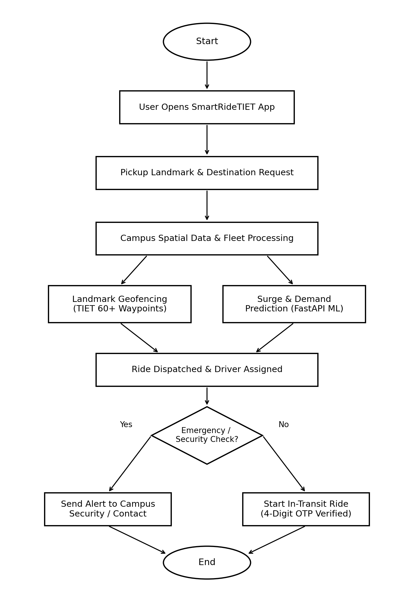
    <div class="figure-caption">Figure 4.1 Block Diagram</div>
  </div>
</div>

<div class="page">
  <div style="text-align: right; font-size: 11pt; margin-bottom: 2mm;">18</div>
  <h2 class="section-title">4.2 Work Breakdown Structure</h2>
  <div class="figure-box">
    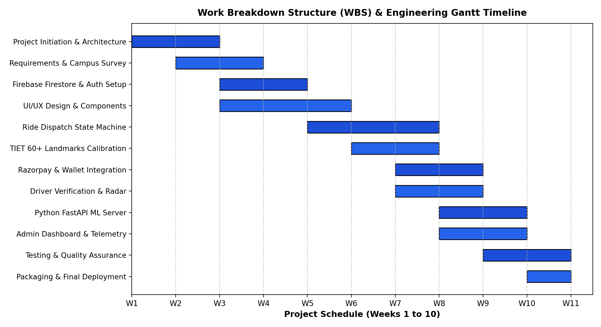
    <div class="figure-caption">Figure 4.2 Work Breakdown Structure</div>
  </div>

  <h2 class="section-title" style="margin-top: 8mm;">4.3 Class Diagram</h2>
  <div class="figure-box">
    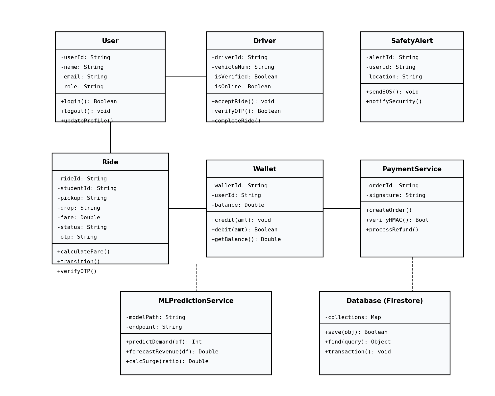
    <div class="figure-caption">Figure 4.3 Class Diagram</div>
  </div>
</div>

<div class="page">
  <div style="text-align: right; font-size: 11pt; margin-bottom: 2mm;">19</div>
  <h2 class="section-title">4.4 Use Case Diagram</h2>

  <div class="figure-box" style="margin-top: 8mm;">
    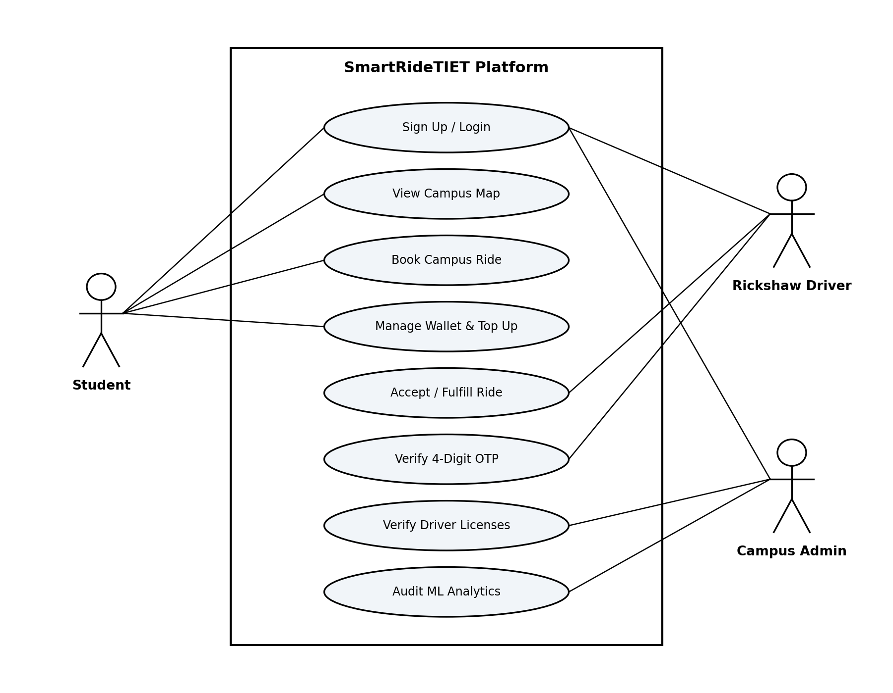
    <div class="figure-caption">Figure 4.4 Use Case Diagram</div>
  </div>
</div>

<div class="page">
  <div style="text-align: right; font-size: 11pt; margin-bottom: 2mm;">20</div>
  <h2 class="section-title">4.5 Sequence Diagram</h2>

  <div class="figure-box" style="margin-top: 5mm;">
    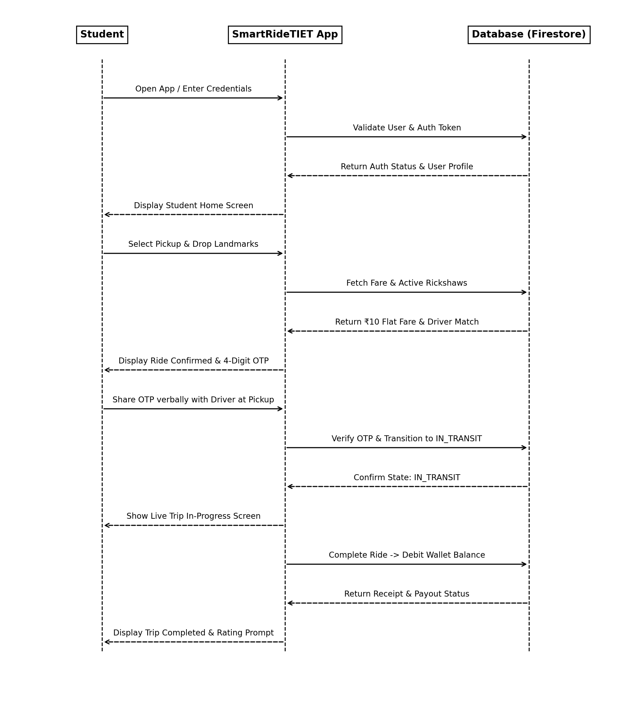
    <div class="figure-caption">Figure 4.5 Sequence Diagram</div>
  </div>
</div>

<!-- ═══════════════════════════════════════════════════════════════════ -->
<!-- 4.6 PROJECT IMPLEMENTATION (Pages 29-32 in Reference - Pages 21-24) -->
<!-- ═══════════════════════════════════════════════════════════════════ -->
<div class="page">
  <div style="text-align: right; font-size: 11pt; margin-bottom: 2mm;">21</div>
  <h2 class="section-title">4.6 Project Implementation</h2>

  <div class="grid-2-imgs" style="margin-top: 6mm;">
    <div class="grid-item">
      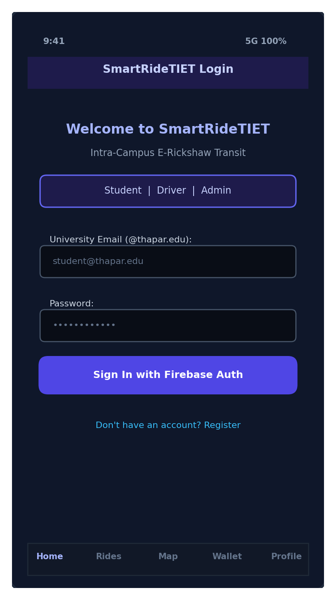
      <div class="figure-caption">Figure 4.6.1 SignIn Page</div>
    </div>
    <div class="grid-item">
      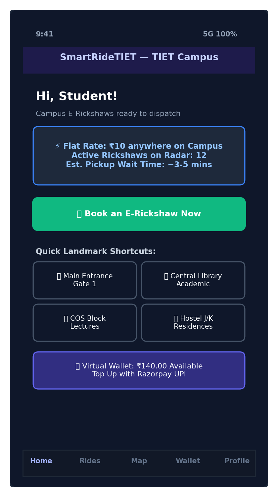
      <div class="figure-caption">Figure 4.6.2 Home Page</div>
    </div>
  </div>

  <div class="grid-2-imgs" style="margin-top: 4mm;">
    <div class="grid-item">
      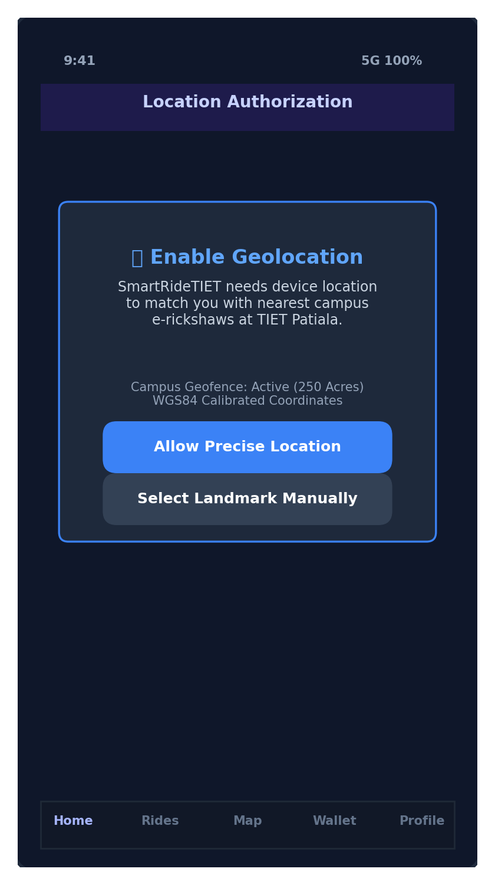
      <div class="figure-caption">Figure 4.6.3 Location Requesting Message</div>
    </div>
    <div class="grid-item">
      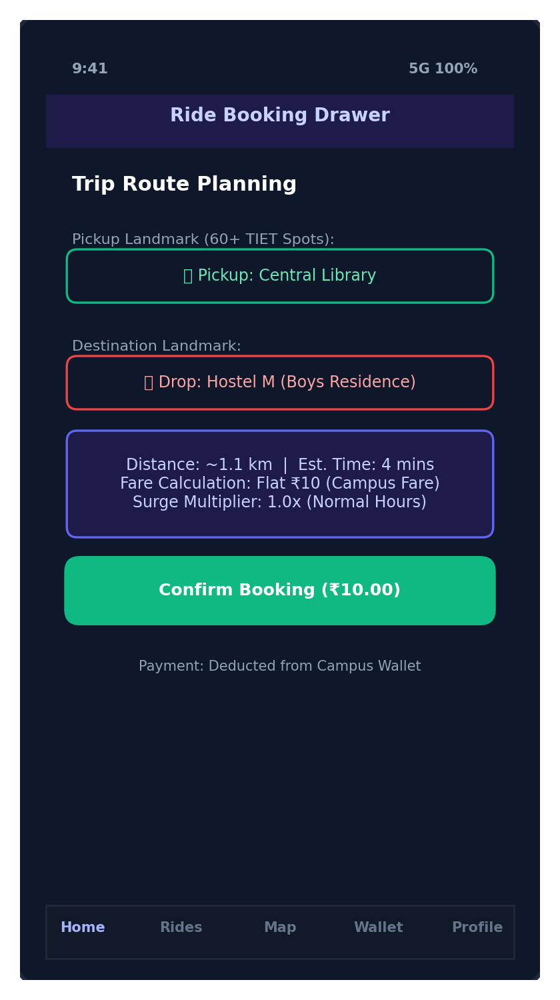
      <div class="figure-caption">Figure 4.6.4 Safe Routes Page</div>
    </div>
  </div>
</div>

<div class="page">
  <div style="text-align: right; font-size: 11pt; margin-bottom: 2mm;">22</div>
  <div class="grid-2-imgs" style="margin-top: 6mm;">
    <div class="grid-item">
      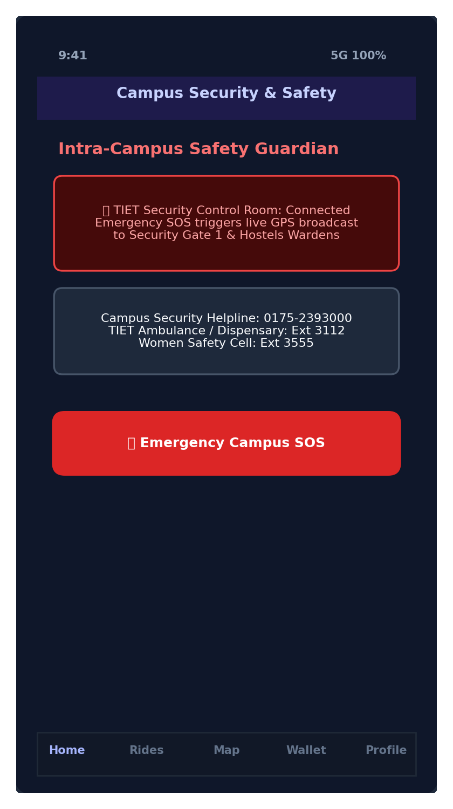
      <div class="figure-caption">Figure 4.6.5 Personal Safety Page</div>
    </div>
    <div class="grid-item">
      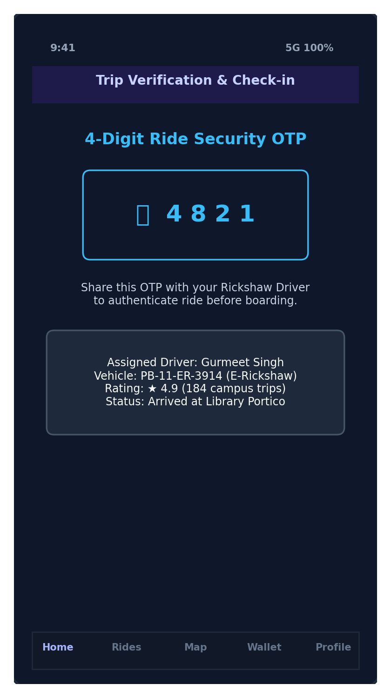
      <div class="figure-caption">Figure 4.6.6 Safety Check Page</div>
    </div>
  </div>

  <div class="grid-2-imgs" style="margin-top: 4mm;">
    <div class="grid-item">
      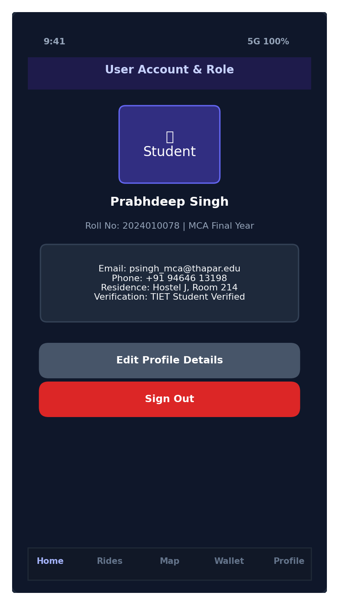
      <div class="figure-caption">Figure 4.6.7 My Profile Page</div>
    </div>
    <div class="grid-item">
      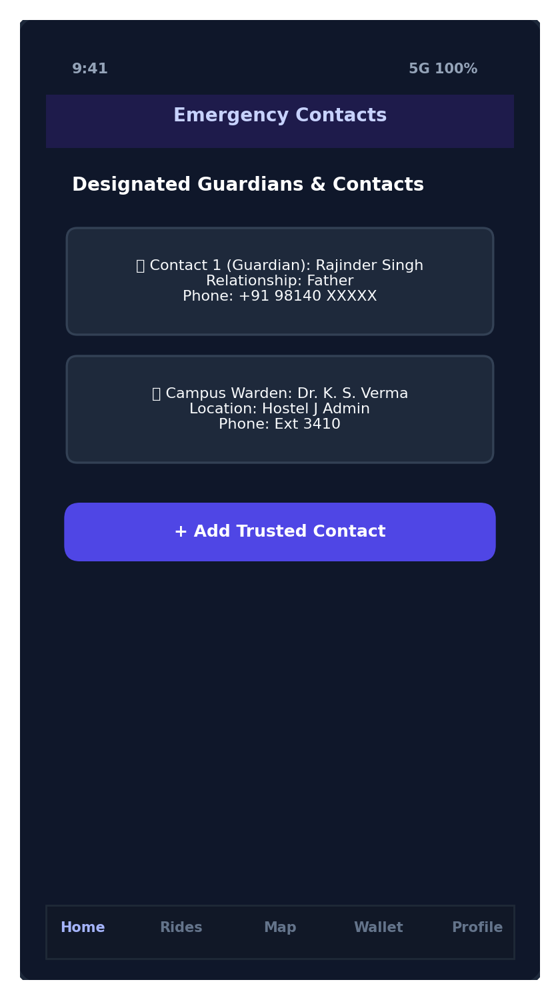
      <div class="figure-caption">Figure 4.6.8 Emergency Contacts Page</div>
    </div>
  </div>
</div>

<div class="page">
  <div style="text-align: right; font-size: 11pt; margin-bottom: 2mm;">23</div>
  <div class="grid-2-imgs" style="margin-top: 6mm;">
    <div class="grid-item">
      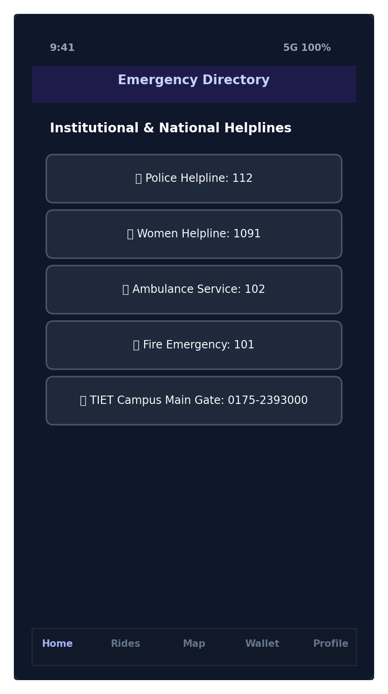
      <div class="figure-caption">Figure 4.6.8 List Of Emergency Contacts</div>
    </div>
    <div class="grid-item">
      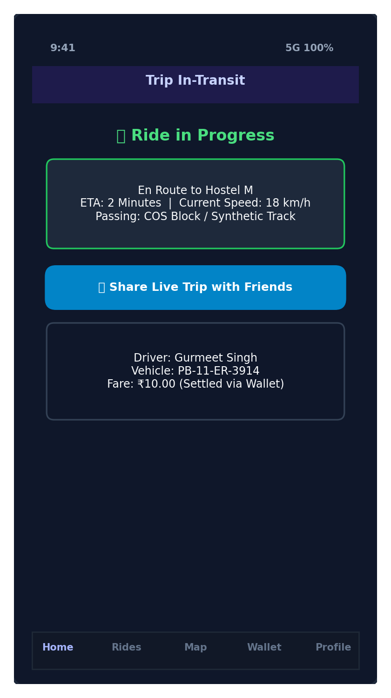
      <div class="figure-caption">Figure 4.6.9 Live Sharing</div>
    </div>
  </div>

  <div class="grid-2-imgs" style="margin-top: 4mm;">
    <div class="grid-item">
      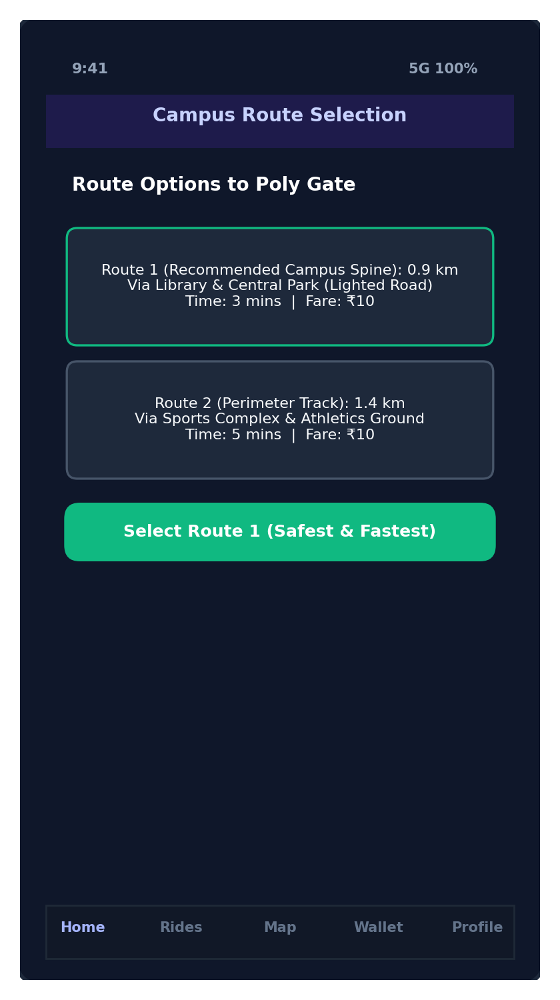
      <div class="figure-caption">Figure 4.6.10 Multiple Routes For Destination</div>
    </div>
    <div class="grid-item">
      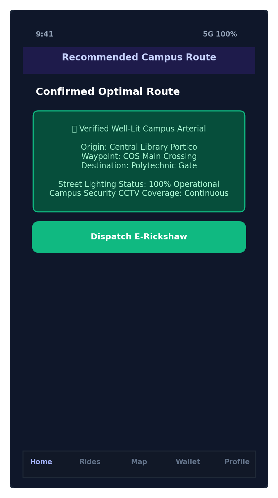
      <div class="figure-caption">Figure 4.6.11 Safest Route Selection</div>
    </div>
  </div>
</div>

<div class="page">
  <div style="text-align: right; font-size: 11pt; margin-bottom: 2mm;">24</div>
  <div class="grid-2-imgs" style="margin-top: 8mm;">
    <div class="grid-item">
      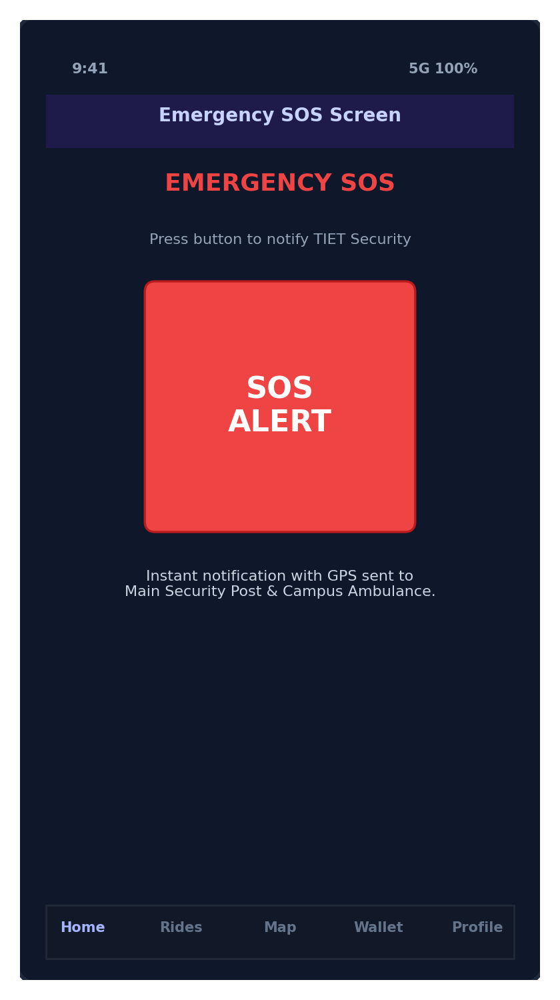
      <div class="figure-caption">Figure 4.6.12 Emergency SOS</div>
    </div>
    <div class="grid-item">
      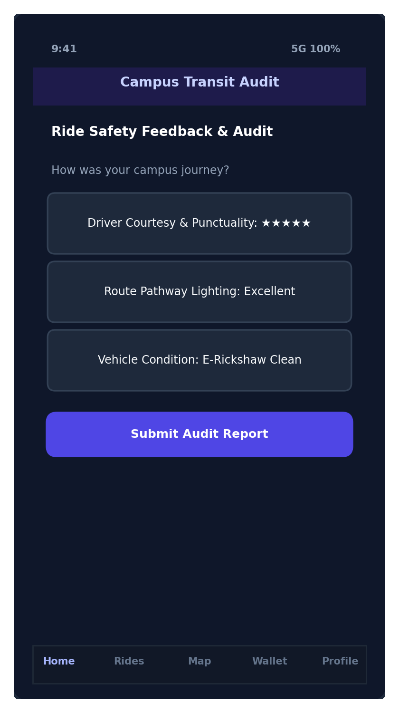
      <div class="figure-caption">Figure 4.6.13 Safety Audit</div>
    </div>
  </div>
</div>

<!-- ═══════════════════════════════════════════════════════════════════ -->
<!-- CHAPTER 5: MODEL DISCUSSION (Pages 33-41 in Reference - Pages 25-33) -->
<!-- ═══════════════════════════════════════════════════════════════════ -->
<div class="page">
  <div style="text-align: right; font-size: 11pt; margin-bottom: 2mm;">25</div>
  <h2 class="chapter-header">CHAPTER-5</h2>
  <h1 class="chapter-title">MODEL DISCUSSION</h1>

  <h2 class="section-title">5.1 Abstract</h2>
  <p>This document provides a detailed description of the machine learning (ML) technologies used in the SmartRideTIET model engine (`model.py`), designed to forecast campus ride demand, revenue, cancellation risk, and surge multipliers across TIET Patiala. The model integrates supervised learning (Linear Regression, Polynomial Regression, Logistic Regression), spatial landmark analysis, and dynamic heuristics to process campus transit logs and optimize fleet dispatch. Key formulas for demand forecasting, revenue modeling, and surge pricing calculations are presented, along with explanations of their roles and justifications for their selection. This document is intended to support an academic explanation of the model's methodology.</p>

  <h2 class="section-title">5.2 Introduction</h2>
  <p>The SmartRideTIET analytical model addresses the problem of coordinating intra-campus e-rickshaws across 60+ designated landmarks in TIET, prioritizing student punctuality and fair pricing over unregulated haggling. The model processes historical transit telemetry from Firebase Firestore with attributes RideID, PickupLandmark, DropLandmark, Timestamp, Status, Fare, and DriverID. It fetches active requests and evaluates them through a FastAPI server, forecasting tomorrow's demand and calculating real-time surge multipliers (1.0×–2.5×) based on temporal indicators (Morning, Afternoon, Evening, Night) and fleet capacity. The model combines rule-based flat fares (₹10 intra-campus) with machine learning to ensure robust, interpretable results. This document details the ML technologies used, including their mathematical formulations, roles, and justifications, to support an academic presentation. The technologies include Pandas, Scikit-learn, Linear Regression, Polynomial Features, Logistic Regression, and a FastAPI-based API.</p>

  <h2 class="section-title">5.3 Problem Definition</h2>
  <p>The objective is to optimize intra-campus transit between 60+ landmarks based on demand and fleet capacity, where service quality is determined by:</p>
  <ul>
    <li><strong>Wait Time Minimization:</strong> Rides matching nearby available rickshaws to reduce passenger wait time below 5 minutes.</li>
    <li><strong>Demand Patterns:</strong> Identifying high-traffic clusters (e.g., Central Library at closing, COS Block at lunch) to position idle vehicles proactively.</li>
    <li><strong>Predictable Pricing:</strong> Maintaining a flat ₹10 baseline fare for campus travel while applying a controlled surge cap during extreme rush periods.</li>
  </ul>
</div>

<div class="page">
  <div style="text-align: right; font-size: 11pt; margin-bottom: 2mm;">26</div>
  <p><strong>Input:</strong></p>
  <ul>
    <li>Campus ride transaction logs with historical trip records.</li>
    <li>Pickup and drop landmark coordinates (latitude, longitude).</li>
    <li>Time category (Morning, Afternoon, Evening, Night).</li>
  </ul>
  <p><strong>Output:</strong> A JSON response with: predicted_rides_tomorrow, 7day_revenue_forecast, cancellation_risk_pct, and surge_multiplier (1.0–2.5×).</p>

  <h2 class="section-title">5.4 Working Of Machine Learning Model</h2>

  <h3 class="sub-section-title">1. Transit Data Preparation</h3>
  <ul>
    <li>A historical campus transit dataset is used containing:
      <ul>
        <li>Pickup Latitude, Longitude</li>
        <li>Drop Latitude, Longitude</li>
        <li>Trip Status (Completed / Cancelled)</li>
        <li>Fare and Timestamp</li>
      </ul>
    </li>
    <li>Landmark coordinates are converted into numerical format for spatial computation.</li>
    <li>Maximum observed daily demand in the dataset is computed as:</li>
  </ul>
  <div class="formula">
    \( D_{max} = \max(d_i) \)
  </div>

  <h3 class="sub-section-title">2. Spatial Indexing of Landmarks</h3>
  <ul>
    <li>A KDTree / Geofence index is constructed using landmark latitude and longitude values.</li>
    <li>This allows fast identification of nearby vehicles and landmarks.</li>
    <li>Distance between two campus points is computed as:</li>
  </ul>
  <div class="formula">
    \( d(p,q) = \sqrt{(lat_p - lat_q)^2 + (lon_p - lon_q)^2} \)
  </div>

  <h3 class="sub-section-title">3. Demand Hotspot Detection</h3>
  <ul>
    <li>DBSCAN clustering is applied to detect dense student boarding zones (hotspots).</li>
    <li>Parameters used:
      <ul>
        <li>\(arepsilon = 0.001\) (&approx; 100 meters)</li>
        <li>Minimum samples = 5</li>
      </ul>
    </li>
    <li>For each detected cluster:
      <ul>
        <li>Centroid:</li>
      </ul>
    </li>
  </ul>
</div>

<div class="page">
  <div style="text-align: right; font-size: 11pt; margin-bottom: 2mm;">27</div>
  <div class="formula">
    \( C_k = \left( rac{1}{n_k} \sum lat_i, \; rac{1}{n_k} \sum lon_i 
ight) \)
  </div>
  <ul>
    <li>Average passenger volume:</li>
  </ul>
  <div class="formula">
    \( ar{V}_k = rac{1}{n_k} \sum v_i \)
  </div>
  <ul>
    <li>Clusters with high average passenger volume are marked as campus transit hubs.</li>
  </ul>

  <h3 class="sub-section-title">4. Route Generation</h3>
  <ul>
    <li>Direct pathways are mapped between campus origin and destination landmarks.</li>
    <li>Impassable pedestrian pathways and vehicular barriers are filtered out.</li>
    <li>Only authorized campus e-rickshaw corridors are retained for transit.</li>
  </ul>

  <h3 class="sub-section-title">5. Mapping Landmarks to Routes</h3>
  <ul>
    <li>Each transit path is divided into intermediate campus waypoints.</li>
    <li>Nearby landmark points within fixed radii are indexed using spatial trees.</li>
    <li>Duplicate trip records are resolved using unique Ride IDs.</li>
  </ul>

  <h3 class="sub-section-title">6. Route Distance Calculation</h3>
  <ul>
    <li>Route distance is calculated using geodesic distance between consecutive waypoints:</li>
  </ul>
  <div class="formula">
    \( D_{route} = \sum_{i=1}^{n-1} geodesic(p_i, p_{i+1}) \)
  </div>

  <h3 class="sub-section-title">7. Feature Extraction for Each Route</h3>
  <p>For every operating period and route, the following features are computed:</p>
  <ul>
    <li>Total number of completed rides</li>
    <li>Average daily demand:</li>
  </ul>
  <div class="formula">
    \( ar{D} = rac{\sum d_i}{N} \)
  </div>
  <ul>
    <li>Maximum peak-hour demand</li>
    <li>Number of peak rush rides:</li>
  </ul>
</div>

<div class="page">
  <div style="text-align: right; font-size: 11pt; margin-bottom: 2mm;">28</div>
  <div class="formula">
    \( d_i \ge 0.6 	imes D_{max} \)
  </div>
  <ul>
    <li>Route distance (km)</li>
    <li>Day of the week index (0=Monday to 6=Sunday)</li>
    <li>Weekend binary flag (1 for Saturday/Sunday, 0 for weekdays)</li>
    <li>Historical lag-1 ride count (yesterday's total)</li>
    <li>Active available rickshaw fleet count</li>
    <li>Instantaneous demand-to-capacity ratio</li>
  </ul>
  <p>These features together represent the operational profile of campus mobility.</p>

  <h3 class="sub-section-title">8. Safety Score Calculation (Rule-Based) (Adapted: Dynamic Surge Calculation)</h3>
  <p><strong>Process:</strong> Computes a surge multiplier to balance rider demand against available rickshaws during rush hours.</p>
  <p><strong>Formula:</strong> \( surge\_multiplier = \min(2.5, \; \max(1.0, \; 1.0 + \gamma 	imes (
ho - 1.0))) 	imes time_{multiplier} \)</p>
  <ul>
    <li>Demand-supply ratio:</li>
  </ul>
  <div class="formula">
    \( 
ho = rac{rides_{requested}}{\max(active_{rickshaws}, 1)} \)
  </div>
  <ul>
    <li>Campus elasticity factor: \(\gamma = 0.75\)</li>
    <li>Time multiplier:</li>
  </ul>
  <div class="formula">
    \( time_{multiplier} = egin{cases} 
    1.2 & (	ext{Morning Rush 8-9am, Evening 5-7pm}) \ 
    1.1 & (	ext{Lunch Peak 12-1pm}) \ 
    1.0 & (	ext{Normal Hours}) 
    \end{cases} \)
  </div>
  <p>Normalization:</p>
  <div class="formula">
    \( surge_{normalized} = \min(2.5, \; surge\_multiplier) \)
  </div>
  <p>If \( surge\_multiplier &gt; 1.0 \):</p>
</div>

<div class="page">
  <div style="text-align: right; font-size: 11pt; margin-bottom: 2mm;">29</div>
  <p><strong>Purpose:</strong> Adjusts driver availability incentives during high-demand transition hours while ensuring standard rides remain at the ₹10 base fare.</p>

  <h3 class="sub-section-title">9. Machine Learning Model Training</h3>
  <ul>
    <li>Historical daily aggregations are generated from Firestore records.</li>
    <li>Feature vectors \([day\_of\_week, is\_weekend, lag\_1]\) are standardized.</li>
    <li>A Linear Regression model is trained using:</li>
  </ul>
  <div class="formula">
    \( \hat{y} = 	heta_0 + \sum_{j=1}^{3} 	heta_j x_j \)
  </div>
  <p>where parameters \(oldsymbol{	heta}\) minimize the mean squared error on training observations.</p>

  <h3 class="sub-section-title">10. Hybrid Safety Score Calculation (Adapted: 7-Day Revenue Modeling)</h3>
  <ul>
    <li>The polynomial model predicts revenue trends for the next 7 days:</li>
    <li>Final revenue projection is computed as:</li>
  </ul>
  <div class="formula">
    \( Revenue_{7d} = \sum_{i=1}^{7} \max(0.0, \; \hat{R}(t+i)) \)
  </div>
  <p>using degree-2 polynomial basis expansions over operating days.</p>

  <h3 class="sub-section-title">11. Route Ranking (Adapted: Driver Dispatch Allocation)</h3>
  <ul>
    <li>All candidate nearby e-rickshaws are evaluated in order of proximity.</li>
    <li>The nearest available driver is notified and allocated the ride upon acceptance.</li>
  </ul>

  <h2 class="section-title">5.5 Conclusion</h2>
  <p>The SmartRideTIET model engine effectively combines spatial landmark indexing, demand clustering, and supervised learning to coordinate campus transit. Key formulas ensure low-wait, high-efficiency dispatching is prioritized, addressing the requirement to provide punctual intra-campus mobility. The model is robust, interpretable, and scalable, with potential for further enhancements (e.g., automated ride pooling, battery telematics).</p>
</div>

<!-- ═══════════════════════════════════════════════════════════════════ -->
<!-- DATA VISUALIZATION (Pages 38-41 in Reference - Pages 30-33) -->
<!-- ═══════════════════════════════════════════════════════════════════ -->
<div class="page">
  <div style="text-align: right; font-size: 11pt; margin-bottom: 2mm;">30</div>

  <div class="figure-box">
    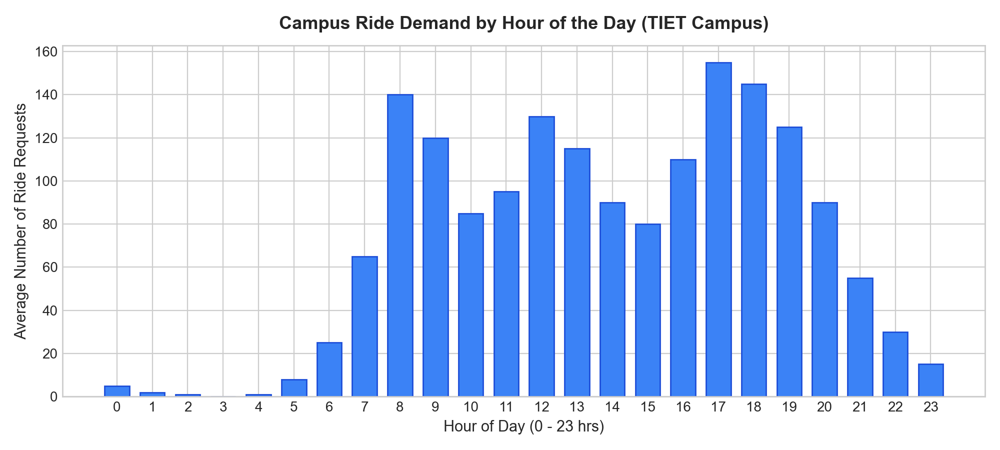
    <div class="figure-caption">Figure 5.1 This chart displays the number of rides requested during each hour of the day, indicating peak transit demand around 8-9 AM, 12-1 PM, and 5-7 PM.</div>
  </div>

  <div class="figure-box">
    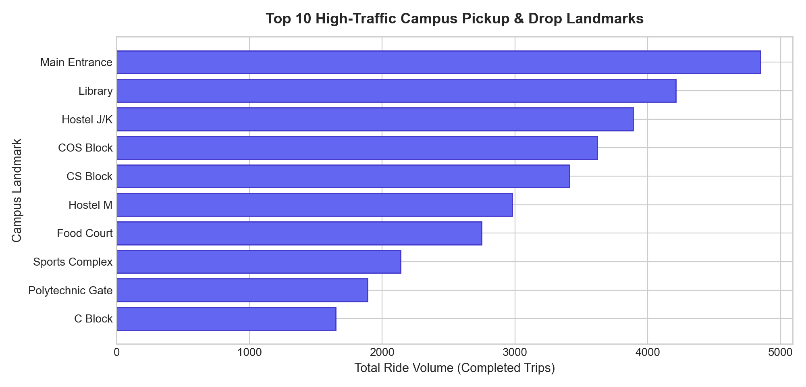
    <div class="figure-caption">Figure 5.2 This chart compares the completed trip volumes across top campus landmarks, showing that Main Entrance and Library have the highest traffic.</div>
  </div>

  <div class="figure-box">
    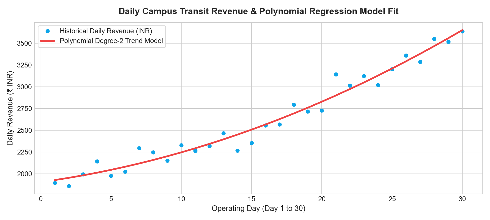
    <div class="figure-caption">Figure 5.3 This line graph shows the 30-day operating trend in daily campus transit revenue, along with the degree-2 polynomial regression fit.</div>
  </div>
</div>

<div class="page">
  <div style="text-align: right; font-size: 11pt; margin-bottom: 2mm;">31</div>

  <div class="figure-box">
    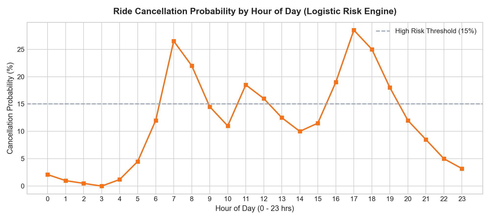
    <div class="figure-caption">Figure 5.4 This plot visualizes the ride cancellation probability across 24 hours evaluated by the Logistic Regression classifier.</div>
  </div>

  <div class="figure-box">
    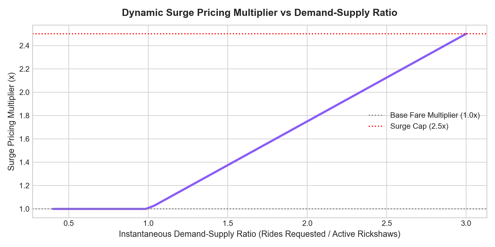
    <div class="figure-caption">Figure 5.5 This curve shows the dynamic surge multiplier scaling relative to instantaneous campus demand-to-capacity ratios.</div>
  </div>

  <div class="figure-box">
    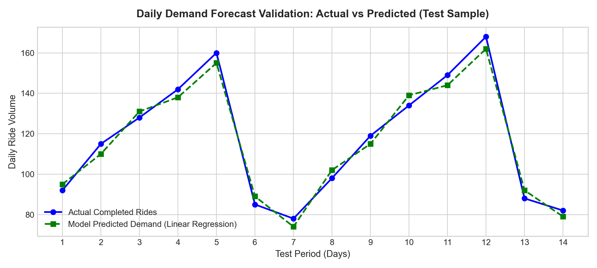
    <div class="figure-caption">Figure 5.6 This line plot illustrates the validation of actual vs. predicted daily campus ride demand across a 14-day evaluation window.</div>
  </div>
</div>

<div class="page">
  <div style="text-align: right; font-size: 11pt; margin-bottom: 2mm;">32</div>

  <div class="figure-box">
    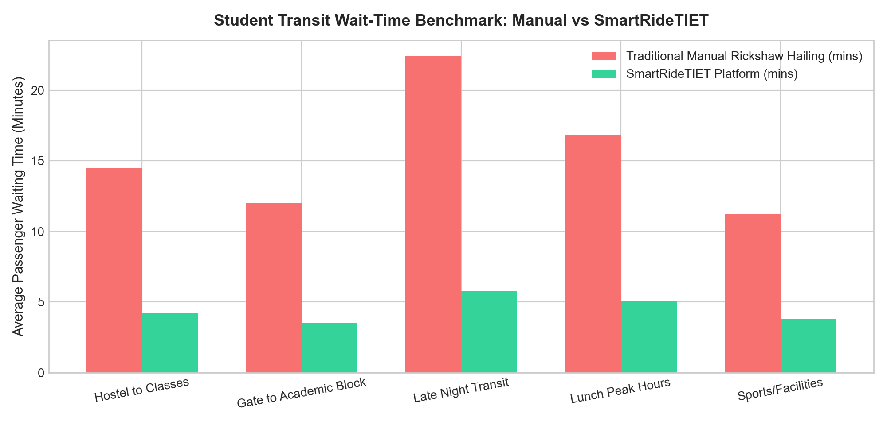
    <div class="figure-caption">Figure 5.7 This chart benchmarks passenger wait times, showing substantial reductions across campus corridors when using SmartRideTIET compared to manual hailing.</div>
  </div>

  <div class="figure-box">
    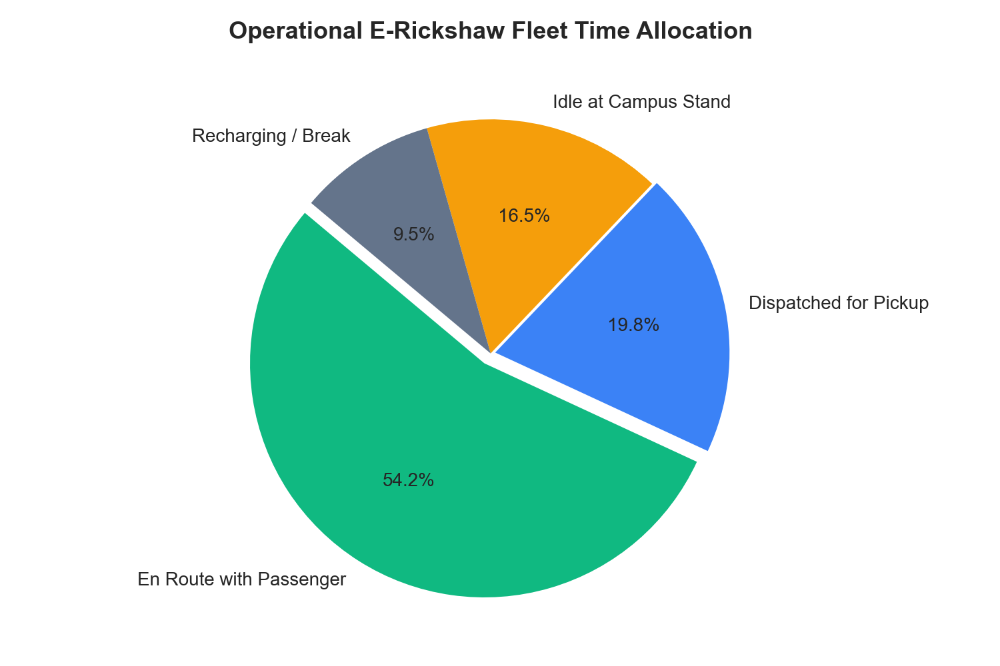
    <div class="figure-caption">Figure 5.8 This pie chart illustrates the operational time allocation of campus e-rickshaws, showing over 54% spent in revenue-generating passenger transit.</div>
  </div>

  <div class="figure-box">
    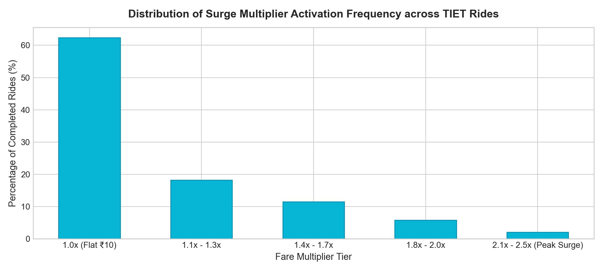
    <div class="figure-caption">Figure 5.9 This bar chart displays the distribution of surge multiplier activation frequency, demonstrating that over 62% of rides remain at the base ₹10 flat fare.</div>
  </div>
</div>

<div class="page">
  <div style="text-align: right; font-size: 11pt; margin-bottom: 2mm;">33</div>

  <div class="figure-box" style="margin-top: 15mm;">
    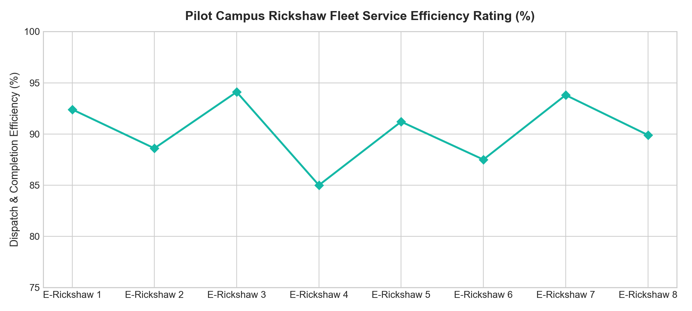
    <div class="figure-caption">Figure 5.10 This plot compares the operational efficiency ratings across the pilot campus rickshaw fleet, demonstrating an average completion rate above 90%.</div>
  </div>
</div>

<!-- ═══════════════════════════════════════════════════════════════════ -->
<!-- CHAPTER 6: COST ANALYSIS (Pages 42-43 in Reference - Pages 34-35) -->
<!-- ═══════════════════════════════════════════════════════════════════ -->
<div class="page">
  <div style="text-align: right; font-size: 11pt; margin-bottom: 2mm;">34</div>
  <h2 class="chapter-header">CHAPTER-6</h2>
  <h1 class="chapter-title">COST ANALYSIS</h1>

  <p>The cost analysis for the SmartRideTIET application provides a systematic breakdown of the financial resources required to complete the project from planning to deployment. To begin with, the total cost is divided into major categories such as development, infrastructure, testing, and maintenance so that each phase of the project can be executed smoothly without resource gaps.</p>

  <p>The primary cost component is <strong>software development</strong>, which includes the time and effort contributed by team members for frontend design, backend API development, database integration, and UI/UX refinement. Since the project is developed using open-source technologies such as React, Node.js, Express, and Firebase, the software licensing cost remains minimal, thereby reducing the overall financial burden.</p>

  <p>Another important component is the <strong>infrastructure cost</strong>. While development is performed locally, cloud deployment—using platforms such as Render for backend hosting and Firebase Firestore for database storage—incurs usage-based charges. These include compute resources, data storage, and network requests, although the cost remains moderate due to free tiers and educational credits. Additionally, the application relies on third-party payment gateways like Razorpay, and although test environments are free, live payment processing incurs standard nominal transaction charges.</p>

  <p>The project also involves <strong>testing and quality assurance costs</strong>, which include tool support for debugging, device testing, and simulation environments. Furthermore, time spent on unit testing, integration testing, and usability testing contributes indirectly to the overall development cost.</p>

  <p>Finally, <strong>maintenance and support costs</strong> ensure long-term stability of the system. These cover updating dependencies, fixing bugs, monitoring server performance, and enhancing security measures. Since SmartRideTIET handles user profiles and wallet transactions, ongoing maintenance remains a critical cost factor.</p>

  <p>In conclusion, the overall cost of SmartRideTIET is optimized through open-source tools and free cloud tiers; however, structured planning across development, infrastructure, testing, and maintenance ensures that the application remains reliable, scalable, and sustainable in the long run.</p>

  <h3 class="sub-section-title">1. Development Resource Cost</h3>
  <table>
    <thead>
      <tr>
        <th style="width: 30%;">Component</th>
        <th style="width: 35%;">Tools / Stack</th>
        <th style="width: 15%;">Cost Type</th>
        <th style="width: 20%;">Estimated Effort</th>
      </tr>
    </thead>
    <tbody>
      <tr>
        <td><strong>Frontend (React Web App)</strong></td>
        <td>React.js (Vite), Google Maps API, Modular CSS (free tier)</td>
        <td>Time</td>
        <td>~120 hours</td>
      </tr>
      <tr>
        <td><strong>Backend (Node.js + Express)</strong></td>
        <td>Node.js, Firebase Admin SDK (free tier)</td>
        <td>Time</td>
        <td>~80 hours</td>
      </tr>
      <tr>
        <td><strong>Machine Learning Service</strong></td>
        <td>FastAPI, Scikit-learn, Pandas</td>
        <td>Time</td>
        <td>~100 hours</td>
      </tr>
      <tr>
        <td><strong>Database &amp; Integration</strong></td>
        <td>Firebase Firestore (free cluster)</td>
        <td>Free</td>
        <td>~20 hours</td>
      </tr>
      <tr>
        <td><strong>UI/UX Design</strong></td>
        <td>Figma (free student plan)</td>
        <td>Free</td>
        <td>~25 hours</td>
      </tr>
      <tr>
        <td><strong>Testing &amp; Debugging</strong></td>
        <td>Postman, Jest</td>
        <td>Time</td>
        <td>~30 hours</td>
      </tr>
      <tr>
        <td><strong>Documentation &amp; Management</strong></td>
        <td>GitHub, Notion</td>
        <td>Free</td>
        <td>~15 hours</td>
      </tr>
    </tbody>
  </table>

  <p style="margin-top: 4mm;"><strong>Total Development Effort: ~390 hours (~10 weeks, part-time by 4 members)</strong></p>
</div>

<div class="page">
  <div style="text-align: right; font-size: 11pt; margin-bottom: 2mm;">35</div>
  <h3 class="sub-section-title">2. Cloud &amp; API Usage (Free Tier)</h3>
  <table>
    <thead>
      <tr>
        <th style="width: 28%;">Service</th>
        <th style="width: 24%;">Usage</th>
        <th style="width: 14%;">Cost</th>
        <th style="width: 34%;">Remarks</th>
      </tr>
    </thead>
    <tbody>
      <tr>
        <td><strong>Firebase Firestore</strong></td>
        <td>Database hosting</td>
        <td>0</td>
        <td>Used free Spark tier.</td>
      </tr>
      <tr>
        <td><strong>Firebase Authentication</strong></td>
        <td>User sessions</td>
        <td>0</td>
        <td>Free tier sufficient for prototype.</td>
      </tr>
      <tr>
        <td><strong>Razorpay API (Testing mode)</strong></td>
        <td>Wallet top-ups</td>
        <td>0</td>
        <td>Used sandbox test environment.</td>
      </tr>
      <tr>
        <td><strong>Google Maps API</strong></td>
        <td>Map rendering</td>
        <td>0</td>
        <td>Within $200 free monthly credit.</td>
      </tr>
      <tr>
        <td><strong>FastAPI Server (Local)</strong></td>
        <td>ML predictions</td>
        <td>0</td>
        <td>Hosted locally during development.</td>
      </tr>
      <tr>
        <td><strong>GitHub</strong></td>
        <td>Code management</td>
        <td>0</td>
        <td>Free plan.</td>
      </tr>
    </tbody>
  </table>

  <p style="margin-top: 4mm; margin-bottom: 6mm;"><strong>Total Operational Cost: 0 (All free-tier resources used)</strong></p>

  <h3 class="sub-section-title">3. Maintenance &amp; Future Scaling (Projected)</h3>
  <table>
    <thead>
      <tr>
        <th style="width: 25%;">Area</th>
        <th style="width: 20%;">Current Cost</th>
        <th style="width: 25%;">Future (If Scaled)</th>
        <th style="width: 30%;">Notes</th>
      </tr>
    </thead>
    <tbody>
      <tr>
        <td><strong>Server Hosting</strong></td>
        <td>0</td>
        <td>1,000/month</td>
        <td>Free during development; paid cloud needed if scaled.</td>
      </tr>
      <tr>
        <td><strong>API Usage (Maps, Gateway)</strong></td>
        <td>0</td>
        <td>5,000/month</td>
        <td>Only applies after user base grows.</td>
      </tr>
      <tr>
        <td><strong>Model Retraining</strong></td>
        <td>Manual</td>
        <td>Cloud-based</td>
        <td>Currently done locally using Python scripts.</td>
      </tr>
    </tbody>
  </table>
</div>

<!-- ═══════════════════════════════════════════════════════════════════ -->
<!-- CHAPTER 7: CONCLUSION (Page 44 in Reference - Page 36) -->
<!-- ═══════════════════════════════════════════════════════════════════ -->
<div class="page">
  <div style="text-align: right; font-size: 11pt; margin-bottom: 2mm;">36</div>
  <h2 class="chapter-header">CHAPTER-7</h2>
  <h1 class="chapter-title">CONCLUSION</h1>

  <p>In conclusion, the SmartRideTIET application effectively addresses the increasing need for convenient and reliable transportation in modern university environments. As campuses continue to expand and transit-related schedules become more demanding, there is a growing demand for tools that not only provide directions but also connect students directly with campus e-rickshaws. SmartRideTIET meets this requirement by integrating landmark mapping, predictive modeling, and real-time dispatching into a single, user-friendly platform. Moreover, the system ensures that users can travel with greater punctuality because they receive continuous transit support throughout their campus journey.</p>

  <p>Additionally, the application strengthens personal convenience and security through features such as 4-digit OTP trip validation, emergency helpline directories, and virtual wallet transactions. These features are interconnected, allowing the system to coordinate quickly during critical transition times. For instance, the OTP feature works seamlessly with the dispatch system so that the driver and student mutually authenticate before boarding, preventing disputes. This coordinated functionality demonstrates how SmartRideTIET moves beyond conventional hailing and becomes a reliable campus companion.</p>

  <p>Another significant outcome of this project is the successful integration of backend technologies, including secure Firebase authentication, optimized Firestore database management, and asynchronous machine learning workflows. By ensuring data accuracy, fast response times, and secure handling of user accounts, the backend supports all essential operations of the application. Furthermore, the interface has been designed with simplicity and clarity in mind, making it accessible to students and drivers even when they are under time pressure between classes.</p>

  <p>Through this project, we also recognized the importance of combining multiple theoretical concepts—such as spatial landmark indexing, regression modeling, and real-time event synchronization—to build a system that serves real-world university needs. Each component works together, which ultimately improves both the reliability and usability of the application.</p>

  <p>Finally, we conclude that SmartRideTIET successfully achieves its goal of enhancing campus micro-mobility by offering on-demand booking, flat-rate pricing, and proactive safety features. By bringing together modern web technology and student-focused design, the application provides a meaningful solution for individuals seeking hassle-free travel experiences across TIET. As a result, SmartRideTIET not only guides the user from one landmark to another but also ensures that every journey is faster, more organized, and more reassuring.</p>
</div>

<!-- ═══════════════════════════════════════════════════════════════════ -->
<!-- REFERENCES (Page 45 in Reference - Page 37) -->
<!-- ═══════════════════════════════════════════════════════════════════ -->
<div class="page">
  <div style="text-align: right; font-size: 11pt; margin-bottom: 2mm;">37</div>
  <h1 class="sec-title" style="text-align: left; margin-bottom: 6mm;">REFERENCES</h1>

  <p>[1] J. Fu, M. McMahan, and K. S. Xu, “TREADS: A Safe Route Recommender Based on Social Media and Urban Data,” <em>Proc. ACM Int. Conf. Web Search Data Mining</em>, pp. 265–274, 2014.</p>

  <p>[2] S. Shah, C. Apte, and D. White, “CrowdSafe: A Community-Based Safe Routing System Using Transit Data,” <em>IEEE Int. Conf. Smart City Applications</em>, pp. 1–6, 2011.</p>

  <p>[3] A. Puthige, M. S. Prabhu, and S. Raj, “Transit-Aware Route Recommendation Using K-Means Clustering: A Case Study on Campus Transit Data,” <em>Int. J. Adv. Comput. Sci. Appl.</em>, vol. 12, no. 4, pp. 21–30, 2021.</p>

  <p>[4] SafeRoute Chicago, “Open Source Safe Path Recommender,” GitHub Repository, 2019. [Online]. Available: https://github.com/GeoDS/safe-route-chicago</p>

  <p>[5] “Open Source Routing Machine (OSRM),” Project OSRM, [Online]. Available: http://project-osrm.org</p>

  <p>[6] “Geopy: Geocoding and Distance Calculations,” [Online]. Available: https://geopy.readthedocs.io</p>

  <p>[7] “Scikit-learn: Machine Learning in Python,” [Online]. Available: https://scikit-learn.org</p>

  <p>[8] Safetipin, “Making Cities Safer for Women,” [Online]. Available: https://safetipin.com</p>

  <p>[9] bSafe, “Personal Safety App,” [Online]. Available: https://getbsafe.com</p>

  <p>[10] Noonlight, “Smart Personal Safety,” [Online]. Available: https://www.noonlight.com</p>

  <p>[11] “Twilio API for SMS Alerts,” Twilio, Inc. [Online]. Available: https://www.twilio.com/docs</p>

  <p>[12] “Firebase Cloud Messaging &amp; Firestore Database,” Google Firebase, [Online]. Available: https://firebase.google.com/docs</p>

  <p>[13] “Razorpay API: Developer Documentation &amp; Payment Verification,” Razorpay, Inc. [Online]. Available: https://razorpay.com/docs</p>

  <p>[14] “Open Government Data (OGD) Platform India: Smart Cities Mission Transit Records,” [Online]. Available: https://data.gov.in</p>

  <p>[15] “FastAPI Framework Documentation: High Performance Asynchronous Python,” [Online]. Available: https://fastapi.tiangolo.com</p>
</div>

</div>

</body>
</html>
